3. JPA in een meerlaagse architectuur
Om de API JPA te bestuderen, hebben we de volgende testarchitectuur gebruikt:
 |
Onze testprogramma’s waren console-applicaties die rechtstreeks de JPA-laag benaderden. Hierbij hebben we de belangrijkste methoden van de JPA-laag ontdekt. We werkten in een zogenaamde „Java SE”-omgeving (Standard Edition). JPA werkt zowel in een Java SE-omgeving als in een Java EE5-omgeving (Enterprise Edition).
Nu we enige ervaring hebben opgedaan met zowel de configuratie van de relationele/objectbrug als het gebruik van de methoden van de JPA-laag, keren we terug naar een meer klassieke meerlaagse architectuur:
 |
De [JPA]-laag wordt benaderd via een tweelaagse architectuur bestaande uit [metier] en [dao]. Het Spring-framework [7] en vervolgens de container EJB3 van JBoss en [8] zullen worden gebruikt om deze lagen met elkaar te verbinden.
We hebben hierboven vermeld dat JPA beschikbaar is in de omgevingen SE en EE5. De Java-omgeving EE5 biedt talrijke diensten op het gebied van toegang tot persistente gegevens, met name verbindingspools, transactiebeheerders, ... Het kan voor een ontwikkelaar interessant zijn om van deze diensten gebruik te maken. De Java-omgeving EE5 is nog niet erg wijdverspreid (mei 2007). Deze is momenteel te vinden op de Sun Application Server 9.x (Glassfish). Een applicatieserver is in wezen een webserver. Als men een zelfstandige grafische applicatie van het type Swing bouwt, kan men geen gebruik maken van de EE-omgeving en de diensten die deze biedt. Dat is een probleem. Er verschijnen nu „stand-alone“ EE-omgevingen, c.a.d. die buiten een applicatieserver kunnen worden gebruikt. Dit geldt bijvoorbeeld voor JBoss en EJB3, die we in dit document zullen gebruiken.
In een EE5-omgeving worden de lagen geïmplementeerd door objecten die EJB (Enterprise Java Bean) worden genoemd. In eerdere versies van EE stonden de EJB (EJB en 2.x) bekend als moeilijk te implementeren, te testen en soms weinig performant. Er wordt onderscheid gemaakt tussen de EJB2.x „entity” en de EJB2.x „session”. Kort gezegd is een EJB2.x "entity" de weergave van een rij in een databasetabel en een EJB2.x "session" een object dat wordt gebruikt om de [metier]-lagen te implementeren, [dao] van een meerlaagse architectuur te implementeren. Een van de belangrijkste punten van kritiek op de met EJB geïmplementeerde lagen is dat ze alleen bruikbaar zijn binnen EJB-containers, een dienst die wordt geleverd door de EE-omgeving. Dit maakt unit-tests problematisch. Zo zijn in het bovenstaande schema zouden de unit-tests van de lagen [metier] en [dao], die zijn opgebouwd met EJB, de installatie van een applicatieserver vereisen, een vrij omslachtige handeling die de ontwikkelaar niet echt stimuleert om regelmatig tests uit te voeren.
Het Spring-framework is ontstaan als reactie op de complexiteit van EJB2. Spring biedt in een SE-omgeving een groot aantal diensten die doorgaans door EE-omgevingen worden geleverd. Zo biedt Spring in het onderdeel „Gegevenspersistentie”, dat ons hier interesseert, de verbindingspools en transactiemanagers die applicaties nodig hebben. De opkomst van Spring heeft de cultuur van unit-tests bevorderd, die ineens veel eenvoudiger te implementeren zijn geworden. Spring maakt het mogelijk de lagen van een applicatie te implementeren met behulp van klassieke Java-objecten (POJO, Plain Old/Ordinary Java Object), waardoor deze in een andere context kunnen worden hergebruikt. Ten slotte integreert het op vrij transparante wijze talrijke tools van derden, met name persistentietools zoals Hibernate, Ibatis, ...
Java EE5 is ontworpen om de tekortkomingen van de vorige specificatie EE te verhelpen. De EJB en 2.x zijn nu de EJB3 geworden. Dit zijn POJOs-objecten die zijn voorzien van annotaties waardoor ze speciale objecten worden wanneer ze zich in een EJB3-container bevinden. Binnen deze container kan de EJB3 gebruikmaken van de diensten van de container (verbindingspool, transactiebeheerder, ...). Buiten de container EJB3 wordt het EJB3-object een normaal Java-object. De annotaties EJB worden genegeerd.
Hierboven hebben we Spring en JBoss EJB3 weergegeven als mogelijke infrastructuur (framework) voor onze meerlaagse architectuur. Deze infrastructuur levert de diensten die we nodig hebben: een verbindingspool en een transactiebeheerder.
- Met Spring worden de lagen geïmplementeerd met POJOs. Deze krijgen toegang tot de diensten van Spring (verbindingspool, transactiebeheerder) door middel van afhankelijkheidsinjectie in deze POJOs: tijdens het aanmaken ervan injecteert Spring er verwijzingen in naar de diensten die ze nodig zullen hebben.
- JBoss EJB3 is een container EJB die buiten een applicatieserver kan draaien. Het werkingsprincipe (voor de ontwikkelaar) is vergelijkbaar met dat wat voor Spring is beschreven. Er zijn maar weinig verschillen.
We sluiten dit document af met een voorbeeld van een webapplicatie met drie lagen, eenvoudig maar niettemin representatief:
 |
3.1. Voorbeeld 1: Spring / JPA met de entiteit Personne
We nemen de entiteit Personne die in paragraaf 2.1 is besproken, en integreren deze in een meerlaagse architectuur waarbij de integratie van de lagen gebeurt met Spring en de persistentielagen worden geïmplementeerd door Hibernate.
 |
Hierbij wordt ervan uitgegaan dat de lezer basiskennis heeft van Spring. Mocht dat niet het geval zijn, dan kan het volgende document worden geraadpleegd, waarin het concept van afhankelijkheidsinjectie – de kern van Spring – wordt uitgelegd:
[ref3]: Spring IoC (Inversion of Control) [http://tahe.developpez.com/java/springioc].
3.1.1. Het Eclipse-/Spring-/Hibernate- -project
Het Eclipse-project is het volgende:
 |
 |
- in [1]: het Eclipse-project. Dit is te vinden in [6] in de voorbeelden van de tutorial [5]. We zullen het importeren.
- in [2]: de Java-codes van de lagen, gepresenteerd in pakketten:
- [entites]: het entiteitenpakket JPA
- [dao]: de laag voor gegevenstoegang – is gebaseerd op de laag JPA
- [service]: een laag die meer op diensten dan op bedrijfslogica is gericht. Hierin wordt gebruikgemaakt van de transactieservice van de containers.
- [tests]: bevat de testprogramma’s.
- in [3]: de bibliotheek [jpa-spring] bevat de jars die nodig zijn voor Spring (zie ook [7] en [8]).
- in [4]: de map [conf] bevat de Spring-configuratiebestanden voor elk van de SGBD-bestanden die in deze tutorial worden gebruikt.
3.1.2. De entiteiten JPA
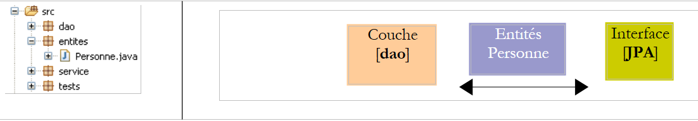 |
Er wordt hier slechts één entiteit beheerd, namelijk de entiteit Personne die in paragraaf 2.1 is besproken en waarvan we de configuratie hieronder nogmaals weergeven:
package entites;
...
@Entity
@Table(name="jpa01_hb_personne")
public class Personne {
@Id
@Column(name = "ID", nullable = false)
@GeneratedValue(strategy = GenerationType.AUTO)
private Integer id;
@Column(name = "VERSION", nullable = false)
@Version
private int version;
@Column(name = "NOM", length = 30, nullable = false, unique = true)
private String nom;
@Column(name = "PRENOM", length = 30, nullable = false)
private String prenom;
@Column(name = "DATENAISSANCE", nullable = false)
@Temporal(TemporalType.DATE)
private Date datenaissance;
@Column(name = "MARIE", nullable = false)
private boolean marie;
@Column(name = "NBENFANTS", nullable = false)
private int nbenfants;
// constructors
public Personne() {
}
public Personne(String nom, String prenom, Date datenaissance, boolean marie,
int nbenfants) {
...
}
// toString
public String toString() {
return String.format("[%d,%d,%s,%s,%s,%s,%d]", getId(), getVersion(),
getNom(), getPrenom(), new SimpleDateFormat("dd/MM/yyyy")
.format(getDatenaissance()), isMarie(), getNbenfants());
}
// getters en setters
...
}
3.1.3. De laag [dao]
 |  |
De laag [dao] heeft de volgende interface IDao:
package dao;
import java.util.List;
import entites.Personne;
public interface IDao {
// een persoon ophalen via zijn ID
public Personne getOne(Integer id);
// alle personen ophalen
public List<Personne> getAll();
// een persoon opslaan
public Personne saveOne(Personne personne);
// een persoon bijwerken
public Personne updateOne(Personne personne);
// een persoon verwijderen op basis van zijn of haar ID
public void deleteOne(Integer id);
// personen ophalen waarvan de naam overeenkomt met een patroon
public List<Personne> getAllLike(String modele);
}
De implementatie [Dao] van deze interface is als volgt:
package dao;
import java.util.List;
import javax.persistence.EntityManager;
import javax.persistence.PersistenceContext;
import entites.Personne;
public class Dao implements IDao {
@PersistenceContext
private EntityManager em;
// een persoon verwijderen via zijn ID
public void deleteOne(Integer id) {
Personne personne = em.find(Personne.class, id);
if (personne == null) {
throw new DaoException(2);
}
em.remove(personne);
}
@SuppressWarnings("unchecked")
// alle personen ophalen
public List<Personne> getAll() {
return em.createQuery("select p from Personne p").getResultList();
}
@SuppressWarnings("unchecked")
// personen ophalen waarvan de naam overeenkomt met een patroon
public List<Personne> getAllLike(String modele) {
return em.createQuery("select p from Personne p where p.nom like :modele")
.setParameter("modele", modele).getResultList();
}
// een persoon ophalen op basis van zijn of haar ID
public Personne getOne(Integer id) {
return em.find(Personne.class, id);
}
// een persoon opslaan
public Personne saveOne(Personne personne) {
em.persist(personne);
return personne;
}
// een persoon bijwerken
public Personne updateOne(Personne personne) {
return em.merge(personne);
}
}
- Allereerst valt de eenvoud van de implementatie [Dao] op. Dit is te danken aan het gebruik van de laag JPA, die het grootste deel van het werk met betrekking tot de toegang tot de gegevens voor zijn rekening neemt.
- regel 10: de klasse [Dao] implementeert de interface [IDao]
- regel 13: het object van het type [EntityManager] dat zal worden gebruikt om de persistentiecontext JPA te bewerken. Omwille van het gemak zullen we dit soms verwarren met de persistentiecontext zelf. De persistentiecontext zal entiteiten van het type Personne bevatten.
- regel 12: nergens in de code wordt het veld [EntityManager em] geïnitialiseerd. Dit gebeurt bij het opstarten van de applicatie door Spring. Het is de annotatie JPA @PersistenceContext op regel 12 die Spring opdraagt om een persistentiecontextmanager in em te injecteren.
- regels 26-28: de lijst met alle personen wordt verkregen via een query JPQL.
- regels 32-35: de lijst met alle personen waarvan de naam overeenkomt met een bepaald model wordt opgehaald via een query JPQL.
- regels 38-40: de persoon met een bepaalde identificatiecode wordt opgehaald via de methode `find` van de API JPA. Geeft een pointer null terug als de persoon niet bestaat.
- regels 43-46: een persoon wordt persistent gemaakt door de methode `persist` van de API JPA. De methode maakt de persoon persistent.
- regels 49-51: het bijwerken van een persoon gebeurt via de methode `merge` van de klasse `API JPA`. Deze methode heeft alleen zin als de persoon die op deze manier wordt bijgewerkt, eerder losgekoppeld was. De methode maakt de aldus aangemaakte persoon persistent.
- regels 16-22: het verwijderen van de persoon waarvan de identificatiecode als parameter wordt doorgegeven, gebeurt in twee stappen:
- regel 17: er wordt gezocht in de persistentie-context
- regels 18-20: als de persoon niet wordt gevonden, wordt er een uitzondering gegenereerd met foutcode 2
- regel 21: als de persoon is gevonden, wordt deze uit de persistentie-context verwijderd met de methode `remove` van API JPA.
- Wat op dit moment nog niet zichtbaar is, is dat elke methode wordt uitgevoerd binnen een transactie die wordt gestart door de laag [service].
De applicatie heeft een eigen uitzonderingstype met de naam [DaoException]:
package dao;
@SuppressWarnings("serial")
public class DaoException extends RuntimeException {
// foutcode
private int code;
public DaoException(int code) {
super();
this.code = code;
}
public DaoException(String message, int code) {
super(message);
this.code = code;
}
public DaoException(Throwable cause, int code) {
super(cause);
this.code = code;
}
public DaoException(String message, Throwable cause, int code) {
super(message, cause);
this.code = code;
}
// getter en setter
public int getCode() {
return code;
}
public void setCode(int code) {
this.code = code;
}
}
- regel 4: [DaoException] is afgeleid van [RuntimeException]. Het gaat dus om een type uitzonderingen waarvoor de compiler ons niet verplicht om deze via een try/catch-constructie af te vangen of in de methodesignatuur op te nemen. Om deze reden staat [DaoException] niet in de methodesignatuur van de methode [deleteOne] van de interface [IDao]. Hierdoor kan deze interface worden geïmplementeerd door een klasse die een ander type uitzonderingen genereert, mits deze eveneens afstamt van [RuntimeException].
- Om de fouten die kunnen optreden van elkaar te onderscheiden, wordt de foutcode uit regel 7 gebruikt. De drie constructors in de regels 14, 19 en 24 zijn die van de bovenliggende klasse [RuntimeException], waaraan een parameter is toegevoegd: de foutcode die aan de uitzondering moet worden toegekend.
3.1.4. De laag [metier / service]
 |
De laag [service] heeft de volgende interface [IService]:
package service;
import java.util.List;
import entites.Personne;
public interface IService {
// een persoon ophalen via zijn ID
public Personne getOne(Integer id);
// alle personen ophalen
public List<Personne> getAll();
// een persoon opslaan
public Personne saveOne(Personne personne);
// een persoon bijwerken
public Personne updateOne(Personne personne);
// een persoon verwijderen op basis van zijn ID
public void deleteOne(Integer id);
// personen ophalen waarvan de naam overeenkomt met een patroon
public List<Personne> getAllLike(String modele);
// meerdere personen tegelijk verwijderen
public void deleteArray(Personne[] personnes);
// meerdere personen tegelijk opslaan
public Personne[] saveArray(Personne[] personnes);
// meerdere personen tegelijk bijwerken
public Personne[] updateArray(Personne[] personnes);
}
- regels 8-24: de interface [IService] neemt de methoden van de interface [IDao] over
- regel 27: met de methode [deleteArray] kan een groep personen binnen een transactie worden verwijderd: ofwel worden alle personen verwijderd, ofwel geen enkele.
- regels 30 en 33: methoden die vergelijkbaar zijn met [deleteArray] om een groep personen binnen een transactie op te slaan (regel 30) of bij te werken (regel 33).
De implementatie [Service] van de interface [IService] is als volgt:
package service;
...
// alle methoden van de klasse worden uitgevoerd binnen één transactie
@Transactional
public class Service implements IService {
// laag [dao]
private IDao dao;
public IDao getDao() {
return dao;
}
public void setDao(IDao dao) {
this.dao = dao;
}
// meerdere personen tegelijk verwijderen
public void deleteArray(Personne[] personnes) {
for (Personne p : personnes) {
dao.deleteOne(p.getId());
}
}
// één persoon verwijderen op basis van zijn of haar ID
public void deleteOne(Integer id) {
dao.deleteOne(id);
}
// alle personen ophalen
public List<Personne> getAll() {
return dao.getAll();
}
// personen ophalen waarvan de naam aan een patroon voldoet
public List<Personne> getAllLike(String modele) {
return dao.getAllLike(modele);
}
// een persoon ophalen op basis van zijn ID
public Personne getOne(Integer id) {
return dao.getOne(id);
}
// meerdere personen tegelijk opslaan
public Personne[] saveArray(Personne[] personnes) {
Personne[] personnes2 = new Personne[personnes.length];
for (int i = 0; i < personnes.length; i++) {
personnes2[i] = dao.saveOne(personnes[i]);
}
return personnes2;
}
// één persoon opslaan
public Personne saveOne(Personne personne) {
return dao.saveOne(personne);
}
// meerdere personen tegelijk bijwerken
public Personne[] updateArray(Personne[] personnes) {
Personne[] personnes2 = new Personne[personnes.length];
for (int i = 0; i < personnes.length; i++) {
personnes2[i] = dao.updateOne(personnes[i]);
}
return personnes2;
}
// een persoon bijwerken
public Personne updateOne(Personne personne) {
return dao.updateOne(personne);
}
}
- regel 6: de Spring-annotatie @Transactional geeft aan dat alle methoden van de klasse binnen een transactie moeten worden uitgevoerd. Er wordt een transactie gestart voordat de methode wordt uitgevoerd en deze wordt afgesloten na de uitvoering. Als er tijdens de uitvoering van de methode een uitzondering van het type [RuntimeException] of een afgeleide daarvan optreedt, wordt de gehele transactie door een automatische rollback ongedaan gemaakt; anders wordt deze door een automatische commit gevalideerd. Het is belangrijk om te onthouden dat de Java-code zich geen zorgen hoeft te maken over transacties. Deze worden beheerd door Spring.
- regel 10: een verwijzing naar de laag [dao]. We zullen later zien dat deze verwijzing door Spring wordt geïnitialiseerd bij het opstarten van de applicatie.
- De methoden van [Service] roepen alleen de methoden aan van de interface [IDao dao] uit regel 10. We laten het aan de lezer over om de code door te nemen. Er zijn geen bijzondere moeilijkheden.
- We hebben eerder gezegd dat elke methode van [Service] binnen een transactie wordt uitgevoerd. Deze transactie is gekoppeld aan de uitvoeringsthread van de methode. In deze thread worden methoden van de laag [dao] uitgevoerd. Deze worden automatisch gekoppeld aan de transactie van de uitvoeringsthread. De methode [deleteArray] (regel 21) voert bijvoorbeeld de methode [deleteOne] uit de laag [dao] N keer uit. Deze N uitvoeringen vinden plaats binnen de uitvoeringsthread van de methode [deleteArray], dus binnen dezelfde transactie. Ze worden dus ofwel allemaal bevestigd (commit) als alles goed verloopt, ofwel allemaal teruggedraaid (rollback) als er een uitzondering optreedt in een van de N uitvoeringen van de methode [deleteOne] van de laag [dao].
3.1.5. Configuratie van de lagen
 |  |
De configuratie van de lagen [service], [dao] en [JPA] wordt verzorgd door de twee bovengenoemde bestanden: [META-INF/persistence.xml] en [spring-config.xml]. Beide bestanden moeten zich in de map classpath van de applicatie bevinden; daarom staan ze in de map [src] van het Eclipse-project. De bestandsnaam [spring-config.xml] kan vrij worden gekozen.
persistence.xml
<?xml version="1.0" encoding="UTF-8"?>
<persistence version="1.0" xmlns="http://java.sun.com/xml/ns/persistence" xmlns:xsi="http://www.w3.org/2001/XMLSchema-instance"
xsi:schemaLocation="http://java.sun.com/xml/ns/persistence http://java.sun.com/xml/ns/persistence/persistence_1_0.xsd">
<persistence-unit name="jpa" transaction-type="RESOURCE_LOCAL" />
</persistence>
- regel 4: het bestand definieert een persistentie-eenheid met de naam jpa die gebruikmaakt van „lokale” transacties, c.a.d, die niet door een container worden geleverd, EJB3. Deze transacties worden aangemaakt en beheerd door Spring en worden geconfigureerd in het bestand [spring-config.xml].
spring-config.xml
<?xml version="1.0" encoding="UTF-8"?>
<beans xmlns="http://www.springframework.org/schema/beans"
xmlns:xsi="http://www.w3.org/2001/XMLSchema-instance"
xmlns:tx="http://www.springframework.org/schema/tx"
xsi:schemaLocation="http://www.springframework.org/schema/beans http://www.springframework.org/schema/beans/spring-beans-2.0.xsd http://www.springframework.org/schema/tx http://www.springframework.org/schema/tx/spring-tx-2.0.xsd">
<!-- toepassingslagen -->
<bean id="dao" class="dao.Dao" />
<bean id="service" class="service.Service">
<property name="dao" ref="dao" />
</bean>
<!-- persistentielaag JPA -->
<bean id="entityManagerFactory"
class="org.springframework.orm.jpa.LocalContainerEntityManagerFactoryBean">
<property name="dataSource" ref="dataSource" />
<property name="jpaVendorAdapter">
<bean
class="org.springframework.orm.jpa.vendor.HibernateJpaVendorAdapter">
<!--
<property name="showSql" value="true" />
-->
<property name="databasePlatform"
value="org.hibernate.dialect.MySQL5InnoDBDialect" />
<property name="generateDdl" value="true" />
</bean>
</property>
<property name="loadTimeWeaver">
<bean
class="org.springframework.instrument.classloading.InstrumentationLoadTimeWeaver" />
</property>
</bean>
<!-- de gegevensbron DBCP -->
<bean id="dataSource"
class="org.apache.commons.dbcp.BasicDataSource"
destroy-method="close">
<property name="driverClassName" value="com.mysql.jdbc.Driver" />
<property name="url" value="jdbc:mysql://localhost:3306/jpa" />
<property name="username" value="jpa" />
<property name="password" value="jpa" />
</bean>
<!-- de transactiebeheerder -->
<tx:annotation-driven transaction-manager="txManager" />
<bean id="txManager"
class="org.springframework.orm.jpa.JpaTransactionManager">
<property name="entityManagerFactory"
ref="entityManagerFactory" />
</bean>
<!-- uitzonderingsvertaling -->
<bean
class="org.springframework.dao.annotation.PersistenceExceptionTranslationPostProcessor" />
<!-- persistentie-annotaties -->
<bean
class="org.springframework.orm.jpa.support.PersistenceAnnotationBeanPostProcessor" />
</beans>
- regels 2-5: de root-tag <beans> van het configuratiebestand. We geven geen toelichting op de verschillende attributen van deze tag. Zorg ervoor dat u de tekst kopieert en plakt, want een fout in een van deze attributen leidt tot fouten die soms moeilijk te begrijpen zijn.
- regel 8: de bean "dao" is een verwijzing naar een instantie van de klasse [dao.Dao]. Er wordt één enkele instantie aangemaakt (singleton) die de laag [dao] van de applicatie implementeert.
- regels 9-11: instantiëren van de laag [service]. De bean "service" is een verwijzing naar een instantie van de klasse [service.Service]. Er wordt één enkele instantie aangemaakt (singleton) die de laag [service] van de applicatie implementeert. We hebben gezien dat de klasse [service.Service] een privéveld [IDao dao] had. Dit veld wordt in regel 10 geïnitialiseerd door de "dao"-bean die in regel 8 is gedefinieerd.
- Uiteindelijk hebben de regels 8-11 de lagen [dao] en [service] geconfigureerd. We zullen later zien wanneer en hoe deze worden geïnstantieerd.
- regels 35-42: er wordt een gegevensbron gedefinieerd. We zijn het begrip gegevensbron al tegengekomen bij de bespreking van de entiteiten JPA met Hibernate:
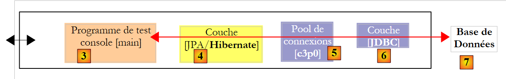 |
Hierboven had [c3p0], ook wel „verbindingspool“ genoemd, „gegevensbron“ kunnen heten. Een gegevensbron levert de dienst „verbindingspool“. Met Spring zullen we een andere gegevensbron gebruiken dan [c3p0]. Dit is [DBCP] uit het Apache Commons-project DBCP [http://jakarta.apache.org/commons/dbcp/]. De archieven van [DBCP] zijn in de gebruikersbibliotheek [jpa-spring] geplaatst:
 |
- regels 38-41: om verbindingen met de doeldatabase tot stand te brengen, moet de gegevensbron de gebruikte JDBC-driver (regel 38), de URL van de database (regel 39) en de gebruikersnaam en het wachtwoord voor de verbinding (regels 40-41) kennen.
- regels 14-32: configureren de laag JPA
- regels 14-15: definiëren een bean van het type [EntityManagerFactory] die objecten van het type [EntityManager] kan aanmaken om de persistentie-contexten te beheren. De geïnstantieerde klasse [LocalContainerEntityManagerFactoryBean] wordt geleverd door Spring. Deze heeft een aantal parameters nodig om te worden geïnstantieerd, die zijn gedefinieerd in de regels 16-31.
- regel 16: de gegevensbron die moet worden gebruikt om verbindingen met SGBD tot stand te brengen. Dit is de bron [DBCP] die in de regels 35-42 is gedefinieerd.
- regels 17-27: de te gebruiken implementatie JPA
- regels 18-26: definiëren Hibernate (regel 19) als de te gebruiken implementatie JPA
- regels 23-24: het dialect SQL dat Hibernate moet gebruiken met het doel-SGBD, in dit geval MySQL5.
- regel 25: geeft aan dat bij het opstarten van de applicatie de database moet worden gegenereerd (drop en create).
- regels 28-31: definiëren een „klassenlader”. Ik kan de rol van deze bean, die wordt gebruikt door de EntityManagerFactory van de JPA-laag, niet duidelijk uitleggen. Hoe dan ook, het houdt in dat aan de JVM, die de applicatie uitvoert, de naam wordt doorgegeven van een archief waarvan de inhoud het laden van de klassen bij het opstarten van de applicatie regelt. In dit geval is dit archief [spring-agent.jar], dat zich in de gebruikersbibliotheek [jpa-spring] bevindt (zie hierboven). We zullen zien dat Hibernate deze agent niet nodig heeft, maar dat Toplink hem wel nodig heeft.
- regels 45-50: definiëren de te gebruiken transactiebeheerder
- regel 45: geeft aan dat de transacties worden beheerd met Java-annotaties (ze hadden ook in spring-config.xml kunnen worden gedeclareerd). Het gaat met name om de annotatie @Transactional die voorkomt in de klasse [Service] (regel 6).
- regels 46-50: de transactiebeheerder
- regel 47: de transactiebeheerder is een klasse die door Spring wordt geleverd
- regels 48-49: de transactiebeheerder van Spring moet de klasse EntityManagerFactory kennen die de laag JPA beheert. Dit is de klasse die op regels 14-32 is gedefinieerd.
- regels 57-58: definiëren de klasse die de Spring-persistentie-annotaties beheert die in de Java-code worden aangetroffen, zoals de annotatie @PersistenceContext van de klasse [dao.Dao] (regel 12).
- regels 53-54: definiëren de Spring-klasse die onder andere de annotatie @Repository beheert, waardoor een klasse met deze annotatie in aanmerking komt voor de vertaling van native uitzonderingen van de Jdbc-driver van het type SGBD naar generieke Spring-uitzonderingen van het type [DataAccessException]. Deze omzetting kapselt de native JDBC-uitzondering in een type [DataAccessException] met verschillende subklassen:
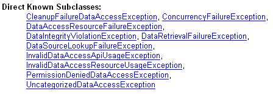
Dankzij deze vertaling kan het clientprogramma uitzonderingen generiek afhandelen, ongeacht de doel-SGBD. We hebben de annotatie @Repository niet gebruikt in onze Java-code. Daarom zijn de regels 53-54 overbodig. We hebben ze louter ter informatie laten staan.
We zijn klaar met het Spring-configuratiebestand. Het is complex en veel zaken blijven onduidelijk. Het is ontleend aan de Spring-documentatie. Gelukkig komt de aanpassing aan verschillende situaties vaak neer op twee wijzigingen:
- de aanpassing van de doeldatabase: regels 38-41. We geven een voorbeeld met Oracle.
- de aanpassing van de implementatie JPA: regels 14-32. We geven een voorbeeld met Toplink.
3.1.6. Clientprogramma [InitDB]
We gaan aan de slag met het schrijven van een eerste client voor de eerder beschreven architectuur:
 |
De code van [InitDB] is als volgt:
package tests;
...
public class InitDB {
// servicelaag
private static IService service;
// constructor
public static void main(String[] args) throws ParseException {
// applicatieconfiguratie
ApplicationContext ctx = new ClassPathXmlApplicationContext("spring-config.xml");
// servicelaag
service = (IService) ctx.getBean("service");
// de database wordt leeggemaakt
clean();
// de database vullen
fill();
// visuele controle
dumpPersonnes();
}
// weergave van de inhoud van de tabel
private static void dumpPersonnes() {
System.out.format("[personnes]%n");
for (Personne p : service.getAll()) {
System.out.println(p);
}
}
// tabel vullen
public static void fill() throws ParseException {
// personen aanmaken
Personne p1 = new Personne("p1", "Paul", new SimpleDateFormat("dd/MM/yy").parse("31/01/2000"), true, 2);
Personne p2 = new Personne("p2", "Sylvie", new SimpleDateFormat("dd/MM/yy").parse("05/07/2001"), false, 0);
// die we opslaan
service.saveArray(new Personne[] { p1, p2 });
}
// elementen uit de tabel verwijderen
public static void clean() {
for (Personne p : service.getAll()) {
service.deleteOne(p.getId());
}
}
}
- regel 12: het bestand [spring-config.xml] wordt gebruikt om een object [ApplicationContext ctx] aan te maken, dat een geheugenafbeelding van het bestand is. De beans die in [spring-config.xml] zijn gedefinieerd, worden bij deze gelegenheid geïnstantieerd.
- regel 14: er wordt aan de applicatiecontext ctx een verwijzing naar de laag [service] gevraagd. We weten dat deze wordt vertegenwoordigd door een bean met de naam "service".
- regel 16: de database wordt leeggemaakt met behulp van de methode clean in de regels 41-45:
- regels 42-44: we vragen de lijst met alle personen op bij de persistentie-context en doorlopen deze om ze één voor één te verwijderen. Misschien herinneren we ons nog dat [spring-config.xml] aangeeft dat de database bij het opstarten van de applicatie moet worden aangemaakt. In ons geval is het aanroepen van de methode clean dus overbodig, aangezien we uitgaan van een lege database.
- regel 18: de methode fill vult de database. Deze wordt gedefinieerd in de regels 32-38:
- regels 34-35: er worden twee personen aangemaakt
- regel 37: de laag [service] wordt gevraagd om deze personen permanent op te slaan.
- regel 20: de methode dumpPersonnes geeft de permanente personen weer. Deze is gedefinieerd in de regels 24-29
- regels 26-28: de laag [service] wordt gevraagd om de lijst met alle permanente personen en deze worden op de console weergegeven.
De uitvoering van [InitDB] levert het volgende resultaat op:
3.1.7. Unit-tests [TestNG]
De installatie van de plug-in [TestNG] wordt beschreven in paragraaf 5.2.4. De programmacode van [TestNG] is als volgt:
package tests;
....
public class TestNG {
// servicelaag
private IService service;
@BeforeClass
public void init() {
// logboek
log("init");
// configuratie van de applicatie
ApplicationContext ctx = new ClassPathXmlApplicationContext("spring-config.xml");
// servicelaag
service = (IService) ctx.getBean("service");
}
@BeforeMethod
public void setUp() throws ParseException {
// database leegmaken
clean();
// de database vullen
fill();
}
// logbestanden
private void log(String message) {
System.out.println("----------- " + message);
}
// tabelinhoud weergeven
private void dump() {
log("dump");
System.out.format("[personnes]%n");
for (Personne p : service.getAll()) {
System.out.println(p);
}
}
// tabel vullen
public void fill() throws ParseException {
log("fill");
// personen aanmaken
Personne p1 = new Personne("p1", "Paul", new SimpleDateFormat("dd/MM/yy").parse("31/01/2000"), true, 2);
Personne p2 = new Personne("p2", "Sylvie", new SimpleDateFormat("dd/MM/yy").parse("05/07/2001"), false, 0);
// die we opslaan
service.saveArray(new Personne[] { p1, p2 });
}
// elementen uit de tabel verwijderen
public void clean() {
log("clean");
for (Personne p : service.getAll()) {
service.deleteOne(p.getId());
}
}
@Test()
public void test01() {
...
}
...
}
- regel 9: de annotatie @BeforeClass geeft de methode aan die moet worden uitgevoerd om de voor de tests benodigde configuratie te initialiseren. Deze wordt uitgevoerd voordat de eerste test wordt uitgevoerd. De annotatie @AfterClass, die hier niet wordt gebruikt, geeft de methode aan die moet worden uitgevoerd zodra alle tests zijn uitgevoerd.
- regels 10-17: de methode `init`, geannoteerd met @BeforeClass, gebruikt het Spring-configuratiebestand om de verschillende lagen van de applicatie te instantiëren en een verwijzing naar de laag `[service]` te verkrijgen. Alle tests maken vervolgens gebruik van deze verwijzing.
- regel 19: de annotatie @BeforeMethod geeft aan welke methode vóór elke test moet worden uitgevoerd. De annotatie @AfterMethod, die hier niet wordt gebruikt, geeft aan welke methode na elke test moet worden uitgevoerd.
- regels 20-25: de methode setUp, geannoteerd met @BeforeMethod, leegt de database (clean, regels 52-56) en vult deze vervolgens met twee personen (fill, regels 42-49).
- regel 59: de annotatie @Test duidt een uit te voeren testmethode aan. We beschrijven deze tests nu.
@Test()
public void test01() {
log("test1");
dump();
// lijst met personen
List<Personne> personnes = service.getAll();
assert 2 == personnes.size();
}
@Test()
public void test02() {
log("test2");
// personen zoeken op naam
List<Personne> personnes = service.getAllLike("p1%");
assert 1 == personnes.size();
Personne p1 = personnes.get(0);
assert "Paul".equals(p1.getPrenom());
}
@Test()
public void test03() throws ParseException {
log("test3");
// een nieuwe persoon aanmaken
Personne p3 = new Personne("p3", "x", new SimpleDateFormat("dd/MM/yy").parse("05/07/2001"), false, 0);
// de persoon opslaan
service.saveOne(p3);
// opnieuw opvragen
Personne loadedp3 = service.getOne(p3.getId());
// de persoon weergeven
System.out.println(loadedp3);
// controle
assert "p3".equals(loadedp3.getNom());
}
- regels 2-8: test 01. Houd er rekening mee dat de database aan het begin van elke test twee personen bevat, respectievelijk p1 en p2.
- regel 6: we vragen de lijst met personen op
- regel 7: we controleren of het aantal personen in de verkregen lijst 2 is
- regel 14: we vragen de lijst op van personen waarvan de naam begint met p1
- we controleren of de verkregen lijst slechts één element bevat (regel 15) en of de voornaam van de enige verkregen persoon "Paul" is (regel 17)
- regel 24: er wordt een persoon aangemaakt met de naam p3
- regel 25: deze wordt opgeslagen
- regel 28: we vragen deze persoon opnieuw op bij de opslagcontext ter controle
- regel 32: we controleren of de opgehaalde persoon inderdaad de naam p3 heeft.
@Test()
public void test04() throws ParseException {
log("test4");
// persoon p1 laden
List<Personne> personnes = service.getAllLike("p1%");
Personne p1 = personnes.get(0);
// we geven het weer
System.out.println(p1);
// wordt gecontroleerd
assert "p1".equals(p1.getNom());
int version1 = p1.getVersion();
// de voornaam wordt gewijzigd
p1.setPrenom("x");
// opslaan
service.updateOne(p1);
// de pagina wordt opnieuw geladen
p1 = service.getOne(p1.getId());
// wordt weergegeven
System.out.println(p1);
// controleert of de versie is verhoogd
assert (version1 + 1) == p1.getVersion();
}
- regel 5: we vragen de persoon p1 op
- regel 10: we controleren de naam
- regel 11: we noteren zijn versienummer
- regel 13: de voornaam wordt gewijzigd
- regel 15: de wijziging wordt opgeslagen
- regel 17: we vragen opnieuw om persoon p1
- regel 21: we controleren of het versienummer met 1 is gestegen
@Test()
public void test05() {
log("test5");
// de persoon p2 wordt geladen
List<Personne> personnes = service.getAllLike("p2%");
Personne p2 = personnes.get(0);
// we geven deze weer
System.out.println(p2);
// we controleren
assert "p2".equals(p2.getNom());
// de persoon p2 wordt verwijderd
service.deleteOne(p2.getId());
// de persoon wordt opnieuw geladen
p2 = service.getOne(p2.getId());
// we controleren of we een null-pointer hebben gekregen
assert null == p2;
// de tabel wordt weergegeven
dump();
}
- regel 5: de persoon p2 opvragen
- regel 10: we controleren de naam
- regel 12: deze wordt verwijderd
- regel 14: we vragen opnieuw om de persoon
- regel 16: er wordt gecontroleerd of deze niet is gevonden
@Test()
public void test06() throws ParseException {
log("test6");
// er wordt een tabel aangemaakt met 2 personen met dezelfde naam (dit is in strijd met de regel dat namen uniek moeten zijn)
Personne[] personnes = { new Personne("p3", "x", new SimpleDateFormat("dd/MM/yy").parse("31/01/2000"), true, 2),
new Personne("p4", "x", new SimpleDateFormat("dd/MM/yy").parse("31/01/2000"), true, 2),
new Personne("p4", "x", new SimpleDateFormat("dd/MM/yy").parse("31/01/2000"), true, 2)};
// we slaan deze tabel op – er moet een uitzondering en een rollback plaatsvinden
boolean erreur = false;
try {
service.saveArray(personnes);
} catch (RuntimeException e) {
erreur = true;
}
// dump
dump();
// controles
assert erreur;
// zoeken naar persoon met de naam p3
List<Personne> personnesp3 = service.getAllLike("p3%");
assert 0 == personnesp3.size();
// dump
dump();
}
- regel 5: er wordt een tabel aangemaakt met drie personen, waarvan er twee dezelfde naam "p4" hebben. Dit is in strijd met de regel dat de naam van de @Entity Personne uniek moet zijn:
@Column(name = "NOM", length = 30, nullable = false, unique = true)
private String nom;
- regel 11: de array met de drie personen wordt in de persistentiecontext geplaatst. Het toevoegen van de tweede persoon p4 zou moeten mislukken. Aangezien de methode [saveArray] binnen een transactie plaatsvindt, worden alle invoegingen die eerder zijn uitgevoerd ongedaan gemaakt. Uiteindelijk wordt er niets toegevoegd.
- regel 18: er wordt gecontroleerd of [saveArray] daadwerkelijk een uitzondering heeft gegenereerd
- regels 20-21: er wordt gecontroleerd of de persoon p3, die mogelijk zou zijn toegevoegd, niet is toegevoegd.
@Test()
public void test07() {
log("test7");
// test van optimistische vergrendeling
// de persoon p1 wordt geladen
List<Personne> personnes = service.getAllLike("p1%");
Personne p1 = personnes.get(0);
// we geven de persoon weer
System.out.println(p1);
// het aantal kinderen wordt verhoogd
int nbEnfants1 = p1.getNbenfants();
p1.setNbenfants(nbEnfants1 + 1);
// p1 wordt opgeslagen
Personne newp1 = service.updateOne(p1);
assert (nbEnfants1 + 1) == newp1.getNbenfants();
System.out.println(newp1);
// we slaan p1 een tweede keer op – er moet een uitzondering optreden omdat p1 niet meer de juiste versie heeft
// het is newp1 die het heeft
boolean erreur = false;
try {
service.updateOne(p1);
} catch (RuntimeException e) {
erreur = true;
}
// controle
assert erreur;
// het aantal kinderen van newp1 wordt verhoogd
int nbEnfants2 = newp1.getNbenfants();
newp1.setNbenfants(nbEnfants2 + 1);
// we slaan newp1 op
service.updateOne(newp1);
// opnieuw laden
p1 = service.getOne(p1.getId());
// controle
assert (nbEnfants1 + 2) == p1.getNbenfants();
System.out.println(p1);
}
- regel 6: de persoon p1 wordt opgevraagd
- regel 12: het aantal kinderen wordt met 1 verhoogd
- regel 14: persoon p1 wordt bijgewerkt in de persistentiecontext. De methode [updateOne] maakt de nieuwe versie newp1 van p1 persistent. Deze verschilt van p1 door het versienummer, dat met 1 moet zijn verhoogd.
- regel 15: het aantal kinderen van newp1 wordt gecontroleerd.
- regel 21: er wordt opnieuw een update van persoon p1 aangevraagd op basis van de oude versie p1. Er moet een uitzondering optreden omdat p1 niet de laatste versie van persoon p1 is. De laatste versie is newp1.
- regel 23: er wordt gecontroleerd of de fout daadwerkelijk is opgetreden
- regels 27-35: we controleren of, wanneer er een update wordt uitgevoerd op basis van de laatste versie newp1, alles goed verloopt.
@Test()
public void test08() {
log("test8");
// rollback-test op updateArray
// de persoon p1 wordt geladen
List<Personne> personnes = service.getAllLike("p1%");
Personne p1 = personnes.get(0);
// wordt weergegeven
System.out.println(p1);
// het aantal kinderen wordt verhoogd
int nbEnfants1 = p1.getNbenfants();
p1.setNbenfants(nbEnfants1 + 1);
// we slaan 2 wijzigingen op, waarvan de tweede moet mislukken (persoon verkeerd geïnitialiseerd)
// vanwege de transactie moeten beide vervolgens worden teruggedraaid
boolean erreur = false;
try {
service.updateArray(new Personne[] { p1, new Personne() });
} catch (RuntimeException e) {
erreur = true;
}
// controles
assert erreur;
// de persoon p1 wordt opnieuw geladen
personnes = service.getAllLike("p1%");
p1 = personnes.get(0);
// het aantal kinderen mag niet zijn veranderd
assert nbEnfants1 == p1.getNbenfants();
}
- test 8 is vergelijkbaar met test 6: deze controleert de rollback op een updateArray die werkt op een array van twee personen, waarbij de tweede niet correct is geïnitialiseerd. Vanuit het perspectief van JPA zal de samenvoegbewerking op de tweede persoon, dieal bestaat, een opdracht SQL insert genereren die zal mislukken vanwege de beperkingen nullable=false die gelden voor bepaalde velden van de entiteit Personne.
@Test()
public void test09() {
log("test9");
// rollback-test op deleteArray
// dump
dump();
// we laden persoon p1
List<Personne> personnes = service.getAllLike("p1%");
Personne p1 = personnes.get(0);
// we geven deze weer
System.out.println(p1);
// er worden 2 verwijderingen uitgevoerd, waarvan de tweede moet mislukken (onbekende persoon)
// vanwege de transactie moeten beide vervolgens worden geannuleerd
boolean erreur = false;
try {
service.deleteArray(new Personne[] { p1, new Personne() });
} catch (RuntimeException e) {
erreur = true;
}
// controles
assert erreur;
// de persoon p1 wordt opnieuw geladen
personnes = service.getAllLike("p1%");
// controle
assert 1 == personnes.size();
// dump
dump();
}
- test 9 is vergelijkbaar met de vorige: deze controleert de rollback op een deleteArray die werkt op een tabel met twee personen, waarbij de tweede persoon niet bestaat. In dit geval genereert de methode [deleteOne] van de laag [dao] echter een uitzondering.
// optimistische vergrendeling – multithread-toegang
@Test()
public void test10() throws Exception {
// toevoeging van een persoon
Personne p3 = new Personne("X", "X", new SimpleDateFormat("dd/MM/yyyy").parse("01/02/2006"), true, 0);
service.saveOne(p3);
int id3 = p3.getId();
// aanmaken van N threads voor het bijwerken van het aantal kinderen
final int N = 20;
Thread[] taches = new Thread[N];
for (int i = 0; i < taches.length; i++) {
taches[i] = new ThreadMajEnfants("thread n° " + i, service, id3);
taches[i].start();
}
// wachten tot de threads zijn voltooid
for (int i = 0; i < taches.length; i++) {
taches[i].join();
}
// de persoon wordt opgehaald
p3 = service.getOne(id3);
// zij moet N kinderen hebben
assert N == p3.getNbenfants();
// persoon p3 verwijderen
service.deleteOne(p3.getId());
// controle
p3 = service.getOne(p3.getId());
// er moet een null-pointer zijn
assert p3 == null;
}
- Het idee achter test 10 is om N threads te starten (regel 9) om het aantal kinderen van een persoon parallel te verhogen. We willen controleren of het versienummersysteem dit scenario goed aankan. Het is hiervoor ontworpen.
- regels 5-6: er wordt een persoon met de naam p3 aangemaakt en vervolgens opgeslagen. Deze persoon heeft in het begin 0 kinderen.
- regel 7: de identificatiecode wordt genoteerd.
- regels 9-14: er worden N threads parallel gestart, die allemaal tot taak hebben het aantal kinderen van p3 met 1 te verhogen.
- regels 16-18: we wachten tot alle threads zijn voltooid
- regel 20: er wordt gevraagd om de persoon p3 te zien
- regel 22: we controleren of deze persoon nu N kinderen heeft
- regel 24: persoon p3 wordt verwijderd.
De thread [ThreadMajEnfants] ziet er als volgt uit:
package tests;
...
public class ThreadMajEnfants extends Thread {
// naam van de thread
private String name;
// verwijzing naar de laag [service]
private IService service;
// de id van de persoon waaraan we gaan werken
private int idPersonne;
// constructor
public ThreadMajEnfants(String name, IService service, int idPersonne) {
this.name = name;
this.service = service;
this.idPersonne = idPersonne;
}
// kern van de thread
public void run() {
// opvolging
suivi("lancé");
// we herhalen de lus totdat we erin geslaagd zijn om de waarde met 1 te verhogen
// het aantal kinderen van de persoon idPersonne
boolean fini = false;
int nbEnfants = 0;
while (!fini) {
// er wordt een kopie opgehaald van de persoon uit idPersonne
Personne personne = service.getOne(idPersonne);
nbEnfants = personne.getNbenfants();
// vervolg
suivi("" + nbEnfants + " -> " + (nbEnfants + 1) + " pour la version " + personne.getVersion());
// verhoogt het aantal kinderen van de persoon met 1
personne.setNbenfants(nbEnfants + 1);
// wacht 10 ms om de processor vrij te geven
try {
// vervolg
suivi("début attente");
// onderbreking om de processor vrij te maken
Thread.sleep(10);
// vervolg
suivi("fin attente");
} catch (Exception ex) {
throw new RuntimeException(ex.toString());
}
// wachten voltooid – poging om de kopie te valideren
// ondertussen hebben andere threads het origineel mogelijk gewijzigd
try {
// we proberen het origineel te wijzigen
service.updateOne(personne);
// het is gelukt – het origineel is gewijzigd
fini = true;
} catch (javax.persistence.OptimisticLockException e) {
// verkeerde versie van het object: de uitzondering wordt genegeerd om opnieuw te beginnen
} catch (org.springframework.transaction.UnexpectedRollbackException e2) {
// Spring-uitzondering die af en toe optreedt
} catch (RuntimeException e3) {
// ander type uitzondering – deze wordt doorgegeven
throw e3;
}
}
// opvolging
suivi("a terminé et passé le nombre d'enfants à " + (nbEnfants + 1));
}
// opvolging
private void suivi(String message) {
System.out.println(name + " [" + new Date().getTime() + "] : " + message);
}
}
- regels 15-19: de constructor slaat de informatie op die hij nodig heeft om te werken: zijn naam (regel 16), de referentie op de laag [service] die hij moet gebruiken (regel 17) en de identificatiecode van de persoon p waarvan hij het aantal kinderen moet verhogen (regel 18).
- regels 22-66: de methode [run] die door alle threads parallel wordt uitgevoerd.
- regel 29: de thread probeert herhaaldelijk het aantal kinderen van persoon p te verhogen. Hij stopt pas wanneer dit is gelukt.
- regel 31: er wordt naar persoon p gevraagd
- regel 36: het aantal kinderen wordt in het geheugen verhoogd
- regels 38-47: er wordt een pauze van 10 ms ingelast. Hierdoor kunnen andere threads dezelfde versie van persoon p ophalen. Er zullen dus op hetzelfde moment meerdere threads zijn die dezelfde versie van persoon p hebben en deze willen wijzigen. Dit is precies de bedoeling.
- regel 52: zodra de pauze voorbij is, vraagt de thread aan de laag [service] om de wijziging op te slaan. We weten dat er af en toe uitzonderingen zullen optreden, dus hebben we de bewerking in een try/catch-blok geplaatst.
- regel 55: uit tests blijkt dat er uitzonderingen van het type [javax.persistence.OptimisticLockException] optreden. Dat is normaal: dit is de uitzondering die door de laag JPA wordt gegenereerd wanneer een thread de persoon p wil wijzigen zonder over de laatste versie daarvan te beschikken. Deze uitzondering wordt genegeerd, zodat de thread de bewerking opnieuw kan proberen totdat deze slaagt.
- regel 57: uit de tests blijkt dat er ook uitzonderingen van het type [org.springframework.transaction.UnexpectedRollbackException] optreden. Dit is vervelend en onverwacht. Ik heb hier geen verklaring voor. We zijn nu afhankelijk van Spring, terwijl we dat juist hadden willen vermijden. Dit betekent dat als we onze applicatie bijvoorbeeld in JBoss Ejb3 uitvoeren, de code van de thread moet worden aangepast. Ook hier wordt de Spring-uitzondering genegeerd, zodat de thread de incrementatie opnieuw kan proberen.
- regel 59: de andere soorten uitzonderingen worden doorgegeven aan de applicatie.
Wanneer [TestNG] wordt uitgevoerd, krijgen we de volgende resultaten:

De 10 tests zijn met succes doorlopen.
Test 10 verdient wat extra uitleg, omdat het feit dat deze is geslaagd iets magisch heeft. Laten we eerst even teruggaan naar de configuratie van de laag [dao]:
public class Dao implements IDao {
@PersistenceContext
private EntityManager em;
- regel 4: een object [EntityManager] wordt in het veld em geïnjecteerd dankzij de annotatie JPA @PersistenceContext. De laag [dao] wordt slechts één keer geïnstantieerd. Het is een singleton die wordt gebruikt door alle threads die de laag JPA gebruiken. Het EntityManager em is dus gemeenschappelijk voor alle threads. Dit kan worden gecontroleerd door de waarde van `em` weer te geven in de methode [updateOne] die door de threads [ThreadMajEnfants] wordt gebruikt: voor alle threads is de waarde hetzelfde.
Daardoor rijst de vraag of de persistente objecten van de verschillende threads, die worden beheerd door de em van EntityManager – die voor alle threads hetzelfde is – niet door elkaar zullen raken en onderling conflicten zullen veroorzaken. Een voorbeeld van wat er zou kunnen gebeuren, is te vinden in [ThreadMajEnfants]:
while (!fini) {
// we halen een kopie op van de persoon uit idPersonne
Personne personne = service.getOne(idPersonne);
nbEnfants = personne.getNbenfants();
// vervolg
suivi("" + nbEnfants + " -> " + (nbEnfants + 1) + " pour la version " + personne.getVersion());
// verhoogt het aantal kinderen van de persoon met 1
personne.setNbenfants(nbEnfants + 1);
// wacht 10 ms om de processor vrij te geven
try {
// vervolg
suivi("début attente");
// onderbreking om de processor vrij te maken
Thread.sleep(10);
// vervolg
suivi("fin attente");
} catch (Exception ex) {
throw new RuntimeException(ex.toString());
}
- regel 3: een thread T1 haalt de persoon p op
- regel 8: deze verhoogt het aantal kinderen van p
- regel 14: de thread T1 pauzeert
Een thread T2 neemt het over en voert ook regel 3 uit: hij vraagt om dezelfde persoon p als T1. Als de persistentiecontext van de threads dezelfde was, zou de persoon p – die dankzij T1 al in de context aanwezig is – moeten worden teruggegeven aan T2. De methode [getOne] maakt namelijk gebruik van de methode [EntityManager].API zoekt naar JPA en deze methode voert alleen een database-opvraging uit als het gevraagde object geen deel uitmaakt van de persistentiecontext; anders retourneert ze het object uit de persistentiecontext. Als dat het geval zou zijn, zouden T1 en T2 dezelfde persoon p bevatten. T2 zou dan het aantal kinderen van p opnieuw met 1 verhogen (regel 8). Als een van de threads na de pauze de update met succes uitvoert, dan is het aantal kinderen van p met 2 toegenomen en niet met 1 zoals verwacht. Men zou dan kunnen verwachten dat de N threads het aantal kinderen niet naar N, maar naar een hoger aantal verhogen. Dit is echter niet het geval. We kunnen dan concluderen dat T1 en T2 niet dezelfde referentie p hebben. We controleren dit door de threads het adres van p te laten weergeven: dit is voor elk van hen verschillend.
Het lijkt er dus op dat de threads:
- dezelfde persistentiecontextmanager delen (EntityManager)
- maar elk hun eigen persistentiecontext hebben.
Dit zijn slechts veronderstellingen en het advies van een expert zou hier nuttig zijn.
3.1.8. Veranderen van SGBD
 |
Om over te schakelen naar SGBD, hoef je alleen maar het bestand [src/spring-config.xml] [2] te vervangen door het bestand [spring-config.xml] of SGBD uit de betreffende map [conf] [1].
Het [spring-config.xml]-bestand van Oracle ziet er bijvoorbeeld als volgt uit:
<?xml version="1.0" encoding="UTF-8"?>
<beans xmlns="http://www.springframework.org/schema/beans" xmlns:xsi="http://www.w3.org/2001/XMLSchema-instance"
xmlns:tx="http://www.springframework.org/schema/tx"
xsi:schemaLocation="http://www.springframework.org/schema/beans http://www.springframework.org/schema/beans/spring-beans-2.0.xsd http://www.springframework.org/schema/tx http://www.springframework.org/schema/tx/spring-tx-2.0.xsd">
...
<bean id="entityManagerFactory" class="org.springframework.orm.jpa.LocalContainerEntityManagerFactoryBean">
<property name="dataSource" ref="dataSource" />
<property name="jpaVendorAdapter">
<bean class="org.springframework.orm.jpa.vendor.HibernateJpaVendorAdapter">
<!--
<property name="showSql" value="true" />
-->
<property name="databasePlatform" value="org.hibernate.dialect.OracleDialect" />
<property name="generateDdl" value="true" />
</bean>
</property>
<property name="loadTimeWeaver">
<bean class="org.springframework.instrument.classloading.InstrumentationLoadTimeWeaver" />
</property>
</bean>
<!-- de gegevensbron DBCP -->
<bean id="dataSource" class="org.apache.commons.dbcp.BasicDataSource" destroy-method="close">
<property name="driverClassName" value="oracle.jdbc.OracleDriver" />
<property name="url" value="jdbc:oracle:thin:@localhost:1521:xe" />
<property name="username" value="jpa" />
<property name="password" value="jpa" />
</bean>
...
</beans>
Slechts enkele regels verschillen ten opzichte van hetzelfde bestand dat eerder werd gebruikt voor MySQL5:
- regel 14: het dialect SQL dat Hibernate moet gebruiken
- regels 25-28: de kenmerken van de JDBC-verbinding met SGBD
De lezer wordt verzocht de tests die voor MySQL5 zijn beschreven, te herhalen met andere SGBD.
3.1.9. Van implementatie wisselen: JPA
Laten we terugkeren naar de architectuur van de vorige tests:
 |
We vervangen de implementatie JPA / Hibernate door een implementatie JPA / Toplink. Aangezien Toplink niet dezelfde bibliotheken gebruikt als Hibernate, gebruiken we een nieuw Eclipse-project:
 |
- in [1]: het Eclipse-project. Dit is identiek aan het vorige. Alleen het configuratiebestand [spring-config.xml] ([2]) en de bibliotheek [jpa-toplink], die de bibliotheek [jpa-hibernate] vervangt, zijn gewijzigd.
- in [3]: de map met voorbeelden voor deze tutorial. In [4] het Eclipse-project dat moet worden geïmporteerd.
Het configuratiebestand [spring-config.xml] voor Toplink ziet er als volgt uit:
<?xml version="1.0" encoding="UTF-8"?>
<!-- moet JVM worden gestart met het argument -javaagent:C:\data\2006-2007\eclipse\dvp-jpa\lib\spring\spring-agent.jar
(à remplacer par le chemin exact de spring-agent.jar)-->
<beans xmlns="http://www.springframework.org/schema/beans" xmlns:xsi="http://www.w3.org/2001/XMLSchema-instance"
xmlns:tx="http://www.springframework.org/schema/tx"
xsi:schemaLocation="http://www.springframework.org/schema/beans http://www.springframework.org/schema/beans/spring-beans-2.0.xsd http://www.springframework.org/schema/tx http://www.springframework.org/schema/tx/spring-tx-2.0.xsd">
<!-- toepassingslagen -->
<bean id="dao" class="dao.Dao" />
<bean id="service" class="service.Service">
<property name="dao" ref="dao" />
</bean>
<bean id="entityManagerFactory" class="org.springframework.orm.jpa.LocalContainerEntityManagerFactoryBean">
<property name="dataSource" ref="dataSource" />
<property name="jpaVendorAdapter">
<bean class="org.springframework.orm.jpa.vendor.TopLinkJpaVendorAdapter">
<!--
<property name="showSql" value="true" />
-->
<property name="databasePlatform" value="oracle.toplink.essentials.platform.database.MySQL4Platform" />
<property name="generateDdl" value="true" />
</bean>
</property>
<property name="loadTimeWeaver">
<bean class="org.springframework.instrument.classloading.InstrumentationLoadTimeWeaver" />
</property>
</bean>
<!-- de gegevensbron DBCP -->
<bean id="dataSource" class="org.apache.commons.dbcp.BasicDataSource" destroy-method="close">
<property name="driverClassName" value="com.mysql.jdbc.Driver" />
<property name="url" value="jdbc:mysql://localhost:3306/jpa" />
<property name="username" value="jpa" />
<property name="password" value="jpa" />
</bean>
<!-- de transactiebeheerder -->
<tx:annotation-driven transaction-manager="txManager" />
<bean id="txManager" class="org.springframework.orm.jpa.JpaTransactionManager">
<property name="entityManagerFactory" ref="entityManagerFactory" />
</bean>
<!-- vertaling van uitzonderingen -->
<bean class="org.springframework.dao.annotation.PersistenceExceptionTranslationPostProcessor" />
<!-- persistentie -->
<bean class="org.springframework.orm.jpa.support.PersistenceAnnotationBeanPostProcessor" />
</beans>
Er hoeven maar een paar regels te worden aangepast om van Hibernate naar Toplink over te stappen:
- regel 19: de implementatie JPA wordt nu door Toplink uitgevoerd
- regel 23: de eigenschap [databasePlatform] heeft een andere waarde dan bij Hibernate: de naam van een klasse die specifiek is voor Toplink. Waar je deze naam kunt vinden, is uitgelegd in paragraaf 2.1.15.2.
Dat is alles. Merk op hoe eenvoudig het is om met Spring over te schakelen van SGBD of de implementatie JPA.
We zijn echter nog niet helemaal klaar. Wanneer we bijvoorbeeld [InitDB] uitvoeren, krijgen we een uitzondering die niet eenvoudig te begrijpen is:
Exception in thread "main" org.springframework.beans.factory.BeanCreationException: Error creating bean with name 'entityManagerFactory' defined in class path resource [spring-config.xml]: Invocation of init method failed; nested exception is java.lang.IllegalStateException: Must start with Java agent to use InstrumentationLoadTimeWeaver. See Spring documentation.
Caused by: java.lang.IllegalStateException: Must start with Java agent to use
De foutmelding op regel 1 nodigt uit om de Spring-documentatie te raadplegen. Daarin ontdek je dan iets meer over de rol die een obscure declaratie in het bestand [spring-config.xml] speelt:
<bean id="entityManagerFactory" class="org.springframework.orm.jpa.LocalContainerEntityManagerFactoryBean">
<property name="dataSource" ref="dataSource" />
<property name="jpaVendorAdapter">
<bean class="org.springframework.orm.jpa.vendor.HibernateJpaVendorAdapter">
<!--
<property name="showSql" value="true" />
-->
<property name="databasePlatform" value="org.hibernate.dialect.OracleDialect" />
<property name="generateDdl" value="true" />
</bean>
</property>
<property name="loadTimeWeaver">
<bean class="org.springframework.instrument.classloading.InstrumentationLoadTimeWeaver" />
</property>
</bean>
Regel 1 van de uitzondering verwijst naar een klasse met de naam [InstrumentationLoadTimeWeaver], een klasse die we terugvinden op regel 13 van het Spring-configuratiebestand. In de Spring-documentatie wordt uitgelegd dat deze klasse in bepaalde gevallen nodig is om de klassen van de applicatie te laden en dat, om deze te kunnen gebruiken, de klasse JVM met een agent moet worden gestart. Deze agent wordt door Spring geleverd en heet [spring-agent]:
 |
- Het bestand [spring-agent.jar] bevindt zich in de map <exemples>/lib [1]. Het wordt meegeleverd met de Spring-distributie 2.x (zie paragraaf 5.11).
- In [3] wordt een uitvoerconfiguratie [Run/Run...] aangemaakt
- in [4] wordt een Java-uitvoeringsconfiguratie aangemaakt (er zijn verschillende soorten uitvoeringsconfiguraties)
 |
- in [5] kiest men het tabblad [Main]
- in [6], geef je de configuratie een naam
- in [7], geef je de naam op van het Eclipse-project waarop deze configuratie betrekking heeft (gebruik de knop ‘Browse’)
- in [8], geef je de naam op van de Java-klasse die de methode [main] bevat (gebruik de knop ‘Browse’)
- in [9] gaat u naar het tabblad [Arguments]. Hier kunt u twee soorten argumenten specificeren:
- in [9]: de argumenten die worden doorgegeven aan de methode [main]
- in [10], de argumenten die worden doorgegeven aan de methode JVM, die de code zal uitvoeren. De Spring-agent wordt gedefinieerd met behulp van de parameter -javaagent:waarde van de methode JVM. De waarde is het pad naar het bestand [spring-agent.jar].
- in [11]: de configuratie wordt gevalideerd
- in [12]: de configuratie wordt aangemaakt
- in [13]: deze wordt uitgevoerd
Zodra dit is gebeurd, wordt [InitDB] uitgevoerd en levert dit dezelfde resultaten op als met Hibernate. Voor [TestNG] moet op dezelfde manier worden te werk gegaan:
 |
- in [1], maak je een uitvoerconfiguratie aan [Run/Run...]
- in [2] maakt men een uitvoeringsconfiguratie aan met de naam TestNG
- in [3], selecteer je het tabblad [Test]
- in [4], geef je de configuratie een naam
- in [5], geef je de naam op van het Eclipse-project waarop deze configuratie betrekking heeft (gebruik de knop ‘Browse’)
- in [6], geef je de naam van de testklasse op (gebruik de knop ‘Browse’)
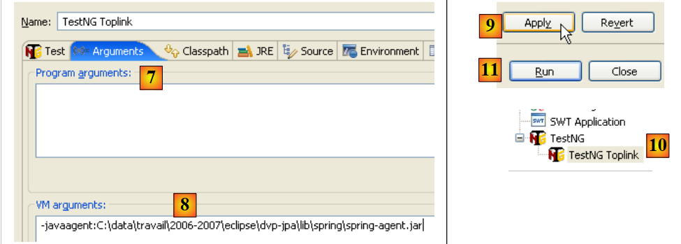 |
- in [7]: ga je naar het tabblad [Arguments].
- in [8]: stel het argument -javaagent van JVM in.
- in [9]: de configuratie wordt bevestigd
- in [10]: de configuratie wordt aangemaakt
- in [11]: deze wordt uitgevoerd
Zodra dit is gebeurd, wordt [TestNG] uitgevoerd en levert dit dezelfde resultaten op als met Hibernate.
3.2. Voorbeeld 2: JBoss EJB3 / JPA met de entiteit Personne
We nemen hetzelfde voorbeeld als hierboven, maar voeren het uit in een container EJB3, die van JBoss:
 |
Een Ejb3-container is normaal gesproken geïntegreerd in een applicatieserver. JBoss levert een "standalone" Ejb3-container die buiten een applicatieserver kan worden gebruikt. We zullen ontdekken dat deze container diensten levert die vergelijkbaar zijn met die van Spring. We zullen proberen te achterhalen welke van deze containers het meest praktisch is.
De installatie van de EJB3-container JBoss wordt beschreven in paragraaf 5.12.
3.2.1. Het Eclipse-/JBoss EJB3-/Hibernate-project
Het Eclipse-project is als volgt:
 |
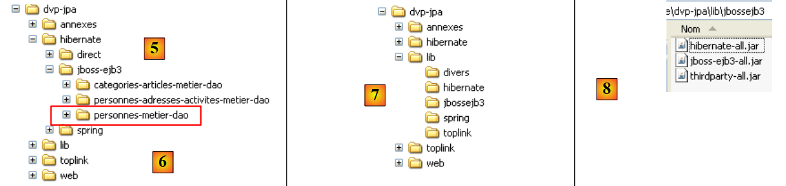 |
- in [1]: het Eclipse-project. Dit is te vinden in [6] in de voorbeelden van de tutorial [5]. We zullen het importeren.
- in [2]: de Java-code van de lagen, gepresenteerd in pakketten:
- [entites]: het pakket met entiteiten JPA
- [dao]: de laag voor gegevenstoegang – is gebaseerd op de laag JPA
- [service]: een laag die meer op diensten dan op bedrijfslogica is gericht. Hierin wordt gebruikgemaakt van de transactieservice van de EJB3-container.
- [tests]: bevat de testprogramma’s.
- in [3]: de bibliotheek [jpa-jbossejb3] bevat de JAR-bestanden die nodig zijn voor JBoss EJB3 (zie ook [7] en [8]).
- in [4]: de map [conf] bevat de configuratiebestanden voor elk van de SGBD-bestanden die in deze tutorial worden gebruikt. Er zijn er telkens twee: [persistence.xml], dat de laag JPA configureert, en [jboss-config.xml], dat de Ejb3-container configureert.
3.2.2. De entiteiten JPA
 |
Er wordt hier slechts één entiteit beheerd, namelijk de entiteit Personne die eerder in paragraaf 3.1.2 is besproken.
3.2.3. De laag [dao]
 |
De laag [dao] bevat de interface [IDao] die eerder in paragraaf 3.1.3 is beschreven.
De implementatie [Dao] van deze interface is als volgt:
package dao;
...
@Stateless
public class Dao implements IDao {
@PersistenceContext
private EntityManager em;
// een persoon verwijderen via zijn ID
@TransactionAttribute(TransactionAttributeType.REQUIRED)
public void deleteOne(Integer id) {
Personne personne = em.find(Personne.class, id);
if (personne == null) {
throw new DaoException(2);
}
em.remove(personne);
}
// alle personen ophalen
@TransactionAttribute(TransactionAttributeType.REQUIRED)
public List<Personne> getAll() {
return em.createQuery("select p from Personne p").getResultList();
}
// personen ophalen waarvan de naam aan een patroon voldoet
@TransactionAttribute(TransactionAttributeType.REQUIRED)
public List<Personne> getAllLike(String modele) {
return em.createQuery("select p from Personne p where p.nom like :modele")
.setParameter("modele", modele).getResultList();
}
// een persoon ophalen via zijn ID
@TransactionAttribute(TransactionAttributeType.REQUIRED)
public Personne getOne(Integer id) {
return em.find(Personne.class, id);
}
// een persoon opslaan
@TransactionAttribute(TransactionAttributeType.REQUIRED)
public Personne saveOne(Personne personne) {
em.persist(personne);
return personne;
}
// een persoon bijwerken
@TransactionAttribute(TransactionAttributeType.REQUIRED)
public Personne updateOne(Personne personne) {
return em.merge(personne);
}
}
- deze code is in alle opzichten identiek aan die van Spring. Alleen de Java-annotaties veranderen en daar gaan we nu op in.
- regel 4: de annotatie @Stateless maakt van de klasse [Dao] een stateless EJB. De annotatie @Stateful maakt van een klasse een stateful EJB. Een stateful EJB heeft privévelden waarvan de waarde in de loop van de tijd behouden moet blijven. Een klassiek voorbeeld is een klasse die informatie bevat die verband houdt met de webgebruiker van een applicatie. Een instantie van deze klasse is gekoppeld aan een specifieke gebruiker en wanneer de uitvoeringsthread van een verzoek van deze gebruiker is voltooid, moet de instantie behouden blijven om beschikbaar te zijn bij het volgende verzoek van dezelfde klant. Een @Stateless EJB heeft geen status. Als we hetzelfde voorbeeld nemen: aan het einde van de uitvoeringsthread van een verzoek van een gebruiker wordt de @Stateless EJB toegevoegd aan een pool van @Stateless EJB’s en komt hij beschikbaar voor de uitvoeringsthread van een verzoek van een andere gebruiker.
- Voor de ontwikkelaar komt het concept van een @Stateless EJB3 dicht in de buurt van dat van een Spring-singleton. Hij zal het in dezelfde gevallen gebruiken.
- regel 7: de annotatie @PersistenceContext is dezelfde als die in de Spring-versie van de [dao]-laag. Deze verwijst naar het veld dat de EntityManager zal ontvangen, waardoor de laag [dao] de persistentiecontext kan beheren.
- regel 11: de annotatie @TransactionAttribute die op een methode wordt toegepast, dient om de transactie te configureren waarin de methode zal worden uitgevoerd. Hieronder volgen enkele mogelijke waarden voor deze annotatie:
- TransactionAttributeType.REQUIRED: de methode moet binnen een transactie worden uitgevoerd. Als er al een transactie is gestart, vinden de persistentiemetingen van de methode daarin plaats. Zo niet, dan wordt er een transactie aangemaakt en gestart.
- TransactionAttributeType.REQUIRES_NEW: de methode moet binnen een nieuwe transactie worden uitgevoerd. Deze wordt aangemaakt en gestart.
- TransactionAttributeType.MANDATORY: de methode moet binnen een bestaande transactie worden uitgevoerd. Als er geen bestaande transactie is, wordt er een uitzondering gegenereerd.
- TransactionAttributeType.NEVER: de methode wordt nooit in een transactie uitgevoerd.
- ...
De annotatie had ook op de klasse zelf geplaatst kunnen worden:
@Stateless
@TransactionAttribute(TransactionAttributeType.REQUIRED)
public class Dao implements IDao {
Het attribuut wordt dan toegepast op alle methoden van de klasse.
3.2.4. De laag [metier / service]
 |
De laag [service] bevat de interface [IService] die eerder in paragraaf 3.1.4 is besproken. De implementatie [Service] van de interface [IService] is identiek aan de implementatie die eerder in paragraaf 3.1.4 is besproken, op drie details na:
@Stateless
@TransactionAttribute(TransactionAttributeType.REQUIRED)
public class Service implements IService {
// laag [dao]
@EJB
private IDao dao;
public IDao getDao() {
return dao;
}
public void setDao(IDao dao) {
this.dao = dao;
}
- regel 2: de klasse [Service] is een stateloze EJB
- regel 3: alle methoden van de klasse [Service] moeten binnen een transactie plaatsvinden
- regels 7-8: een verwijzing naar de EJB van de laag [dao] wordt door de EJB-container geïnjecteerd in het veld [IDao dao] van regel 8. Het is de annotatie @EJB op regel 7 die deze injectie aanvraagt. Het geïnjecteerde object moet een EJB zijn. Dit is een belangrijk verschil met Spring, waar elk type object in een ander object kan worden geïnjecteerd.
3.2.5. Configuratie van de lagen
 |
De configuratie van de lagen [service], [dao] en [JPA] wordt verzorgd door de volgende bestanden:
- [META-INF/persistence.xml] configureert de laag JPA
- [jboss-config.xml] configureert de Ejb3-container. Dit bestand maakt zelf gebruik van de bestanden [default.persistence.properties, ejb3-interceptors-aop.xml, embedded-jboss-beans.xml, jndi.properties]. Deze laatste bestanden worden meegeleverd met Jboss Ejb3 en zorgen voor een standaardconfiguratie die normaal gesproken niet wordt gewijzigd. De ontwikkelaar hoeft zich alleen bezig te houden met het bestand [jboss-config.xml]
Laten we de twee configuratiebestanden eens bekijken:
persistence.xml
<persistence xmlns="http://java.sun.com/xml/ns/persistence" xmlns:xsi="http://www.w3.org/2001/XMLSchema-instance"
xsi:schemaLocation="http://java.sun.com/xml/ns/persistence
http://java.sun.com/xml/ns/persistence/persistence_1_0.xsd" version="1.0">
<persistence-unit name="jpa">
<!-- de provider JPA is Hibernate -->
<provider>org.hibernate.ejb.HibernatePersistence</provider>
<!-- de DataSource JTA wordt beheerd door de Java-omgeving EE5 -->
<jta-data-source>java:/datasource</jta-data-source>
<properties>
<!-- Zoekt naar entiteiten in de laag JBA -->
<property name="hibernate.archive.autodetection" value="class, hbm" />
<!-- Hibernate-logs SQL
<property name="hibernate.show_sql" value="true"/>
<property name="hibernate.format_sql" value="true"/>
<property name="use_sql_comments" value="true"/>
-->
<!-- het type van SGBD beheerd -->
<property name="hibernate.dialect" value="org.hibernate.dialect.MySQLInnoDBDialect" />
<!-- alle tabellen opnieuw aanmaken (drop+create) bij de implementatie van de persistentie-eenheid -->
<property name="hibernate.hbm2ddl.auto" value="create" />
</properties>
</persistence-unit>
</persistence>
Dit bestand lijkt op de bestanden die we al zijn tegengekomen bij de bespreking van de entiteiten JPA. Het configureert een Hibernate-laag JPA. De nieuwe elementen zijn als volgt:
- regel 5: de persistentie-eenheid jpa heeft niet het attribuut transaction-type dat we tot nu toe altijd hadden:
<persistence-unit name="jpa" transaction-type="RESOURCE_LOCAL" />
Bij gebrek aan een waarde heeft het attribuut transaction-type de standaardwaarde "JTA" (voor Java Transaction API), wat aangeeft dat de transactiebeheerder wordt geleverd door een EJB3-container. Een manager „JTA“ kan meer dan een manager „RESOURCE_LOCAL“: hij kan transacties beheren die meerdere verbindingen omvatten. Met JTA kan men een transactie t1 openen op een verbinding c1 op een SGBD 1, een transactie t2 op een verbinding c2 met een SGBD 2, en (t1,t2) als één enkele transactie te beschouwen waarin ofwel alle bewerkingen slagen (commit) ofwel geen enkele (rollback).
Hier werken we met de manager JTA van de JBoss EJB3-container.
- regel 11: declareert de gegevensbron die de manager JTA moet gebruiken. Deze wordt opgegeven in de vorm van een JNDI-naam (Java Naming and Directory Interface). Deze gegevensbron is gedefinieerd in [jboss-config.xml].
jboss-config.xml
<?xml version="1.0" encoding="UTF-8"?>
<deployment xmlns:xsi="http://www.w3.org/2001/XMLSchema-instance" xsi:schemaLocation="urn:jboss:bean-deployer bean-deployer_1_0.xsd"
xmlns="urn:jboss:bean-deployer:2.0">
<!-- factory van de DataSource -->
<bean name="datasourceFactory" class="org.jboss.resource.adapter.jdbc.local.LocalTxDataSource">
<!-- naam JNDI van de DataSource -->
<property name="jndiName">java:/datasource</property>
<!-- beheerde database -->
<property name="driverClass">com.mysql.jdbc.Driver</property>
<property name="connectionURL">jdbc:mysql://localhost:3306/jpa</property>
<property name="userName">jpa</property>
<property name="password">jpa</property>
<!-- eigenschappen verbindingspool -->
<property name="minSize">0</property>
<property name="maxSize">10</property>
<property name="blockingTimeout">1000</property>
<property name="idleTimeout">100000</property>
<!-- transactiebeheerder, hier JTA -->
<property name="transactionManager">
<inject bean="TransactionManager" />
</property>
<!-- Hibernate-cachebeheerder -->
<property name="cachedConnectionManager">
<inject bean="CachedConnectionManager" />
</property>
<!-- instantiatie-eigenschappen JNDI? -->
<property name="initialContextProperties">
<inject bean="InitialContextProperties" />
</property>
</bean>
<!-- de DataSource wordt aangevraagd bij een factory -->
<bean name="datasource" class="java.lang.Object">
<constructor factoryMethod="getDatasource">
<factory bean="datasourceFactory" />
</constructor>
</bean>
</deployment>
- regel 3: de root-tag van het bestand is <deployment>. Dit implementatiebestand is voornamelijk bedoeld om de gegevensbron java:/datasource te configureren die is gedeclareerd in persistence.xml.
- De gegevensbron wordt gedefinieerd door de bean "datasource" op regel 38. We zien dat de gegevensbron (regel 40) wordt opgehaald bij een "factory" die wordt gedefinieerd door de bean "datasourceFactory" op regel 7. Om de gegevensbron van de applicatie te verkrijgen, moet de client de methode [getDatasource] van de factory aanroepen (regel 39).
- regel 7: de factory die de gegevensbron levert, is een JBoss-klasse.
- regel 9: de naam JNDI van de gegevensbron. Dit moet dezelfde naam zijn als die welke is opgegeven in de tag <jta-data-source> van het bestand persistence.xml. De laag JPA zal deze naam JNDI namelijk gebruiken om de gegevensbron op te vragen.
- regels 12-15: iets meer standaard: de JDBC-instellingen voor de verbinding met SGBD
- regels 18-21: configuratie van de interne verbindingspool van de JBoss EJB3-container.
- regels 24-26: de manager JTA. De klasse [TransactionManager] die in regel 25 wordt geïnjecteerd, is gedefinieerd in het bestand [embedded-jboss-beans.xml].
- regels 28-30: de Hibernate-cache, een begrip dat we nog niet hebben behandeld. De klasse [CachedConnectionManager], die op regel 29 wordt geïnjecteerd, is gedefinieerd in het bestand [embedded-jboss-beans.xml]. Merk op dat de configuratie nu afhankelijk is van Hibernate, wat een probleem zal opleveren wanneer we naar Toplink willen migreren.
- regels 32-34: configuratie van de service JNDI.
We zijn klaar met het configuratiebestand van JBoss EJB3. Het is complex en veel zaken blijven onduidelijk. Het is afkomstig uit [ref1]. We zullen het echter kunnen aanpassen aan een andere SGBD (regels 12-15 van jboss-config.xml, regel 24 van persistence.xml). De migratie naar Toplink was niet mogelijk bij gebrek aan voorbeelden.
3.2.6. Clientprogramma [InitDB]
We gaan nu aan de slag met het schrijven van een eerste client voor de eerder beschreven architectuur:
 |
De code van [InitDB] is als volgt:
package tests;
...
public class InitDB {
// servicelaag
private static IService service;
// constructor
public static void main(String[] args) throws ParseException, NamingException {
// de container wordt gestart EJB3 JBoss
// de configuratiebestanden ejb3-interceptors-aop.xml en embedded-jboss-beans.xml worden verwerkt
EJB3StandaloneBootstrap.boot(null);
// Aanmaken van applicatiespecifieke beans
EJB3StandaloneBootstrap.deployXmlResource("META-INF/jboss-config.xml");
// Alle EJBs-bestanden op het classpath implementeren (traag, scant alles)
// EJB3StandaloneBootstrap.scanClasspath();
// Alle EJB-bestanden die in het classpath van de applicatie zijn gevonden, worden geïmplementeerd
EJB3StandaloneBootstrap.scanClasspath("bin".replace("/", File.separator));
// De context JNDI wordt geïnitialiseerd. Het bestand jndi.properties wordt gebruikt
InitialContext initialContext = new InitialContext();
// instantiëring van de servicelaag
service = (IService) initialContext.lookup("Service/local");
// De database wordt leeggemaakt
clean();
// de database wordt gevuld
fill();
// visuele controle
dumpPersonnes();
// de EJB-container wordt gestopt
EJB3StandaloneBootstrap.shutdown();
}
// de inhoud van de tabel weergeven
private static void dumpPersonnes() {
System.out.format("[personnes]-------------------------------------------------------------------%n");
for (Personne p : service.getAll()) {
System.out.println(p);
}
}
// de tabel vullen
public static void fill() throws ParseException {
// personen aanmaken
Personne p1 = new Personne("p1", "Paul", new SimpleDateFormat("dd/MM/yy").parse("31/01/2000"), true, 2);
Personne p2 = new Personne("p2", "Sylvie", new SimpleDateFormat("dd/MM/yy").parse("05/07/2001"), false, 0);
// die worden opgeslagen
service.saveArray(new Personne[] { p1, p2 });
}
// elementen uit de tabel verwijderen
public static void clean() {
for (Personne p : service.getAll()) {
service.deleteOne(p.getId());
}
}
}
- De manier om de JBoss EJB3-container te starten is te vinden in [ref1].
- regel 13: de container wordt gestart. [EJB3StandaloneBootstrap] is een klasse van de container.
- regel 16: de door [jboss-config.xml] geconfigureerde implementatie-eenheid wordt in de container geïmplementeerd: de manager JTA, de gegevensbron, de verbindingspool, de Hibernate-cache en de service JNDI worden ingesteld.
- regel 22: de container wordt gevraagd de map ‘bin’ van het Eclipse-project te scannen om daar de EJB’s te vinden. De EJB’s van de lagen [service] en [dao] worden door de container gevonden en beheerd.
- regel 25: er wordt een context JNDI geïnitialiseerd. Deze zullen we gebruiken om de EJB’s te lokaliseren.
- regel 28: de EJB die overeenkomt met de klasse [Service] van de laag [service] wordt opgevraagd bij de service JNDI. Een EJB is lokaal (local) of via het netwerk (remote) toegankelijk. Hier verwijst de naam „Service/local” van de gezochte EJB naar de klasse [Service] van de laag [service] voor lokale toegang.
- Nu is de applicatie geïmplementeerd en hebben we een verwijzing naar de laag [service]. We bevinden ons in dezelfde situatie als na regel 11 hieronder van de code [InitDB] van de Spring-versie. We zien dan ook dezelfde code in beide versies.
public class InitDB {
// servicelaag
private static IService service;
// constructor
public static void main(String[] args) throws ParseException {
// configuratie van de applicatie
ApplicationContext ctx = new ClassPathXmlApplicationContext("spring-config.xml");
// servicelaag
service = (IService) ctx.getBean("service");
// de database leegmaken
clean();
// de database wordt gevuld
fill();
// visuele controle
dumpPersonnes();
}
...
- regel 36 (JBoss EJB3): we stoppen de EJB3-container.
De uitvoering van [InitDB] levert de volgende resultaten op:
De lezer wordt verzocht deze logbestanden te lezen. Daarin staat interessante informatie over wat de EJB3-container doet.
3.2.7. Unit-tests [TestNG]
De programmacode van [TestNG] is als volgt:
package tests;
...
public class TestNG {
// servicelaag
private IService service = null;
@BeforeClass
public void init() throws NamingException, ParseException {
// logboek
log("init");
// de container wordt gestart EJB3 JBoss
// de configuratiebestanden ejb3-interceptors-aop.xml en embedded-jboss-beans.xml worden gebruikt
EJB3StandaloneBootstrap.boot(null);
// Aanmaken van applicatiespecifieke beans
EJB3StandaloneBootstrap.deployXmlResource("META-INF/jboss-config.xml");
// Alle EJBs-bestanden op het classpath implementeren (traag, scant alles)
// EJB3StandaloneBootstrap.scanClasspath();
// Alle EJB-bestanden die in het classpath van de applicatie zijn gevonden, worden geïmplementeerd
EJB3StandaloneBootstrap.scanClasspath("bin".replace("/", File.separator));
// De context JNDI wordt geïnitialiseerd. Het bestand jndi.properties wordt gebruikt
InitialContext initialContext = new InitialContext();
// instantiëring van de servicelaag
service = (IService) initialContext.lookup("Service/local");
// de database wordt leeggemaakt
clean();
// de database wordt gevuld
fill();
// visuele controle
dumpPersonnes();
}
@AfterClass
public void terminate() {
// logboek
log("terminate");
// EJB-container afsluiten
EJB3StandaloneBootstrap.shutdown();
}
@BeforeMethod
public void setUp() throws ParseException {
...
}
...
}
- De methode init (regels 10-37), die dient om de benodigde omgeving voor de tests op te zetten, bevat de code die eerder is uitgelegd in [InitDB].
- De methode `terminate` (regels 40-45), die aan het einde van de tests wordt uitgevoerd (aanwezigheid van de annotatie @AfterClass), stopt de EJB3-container (regel 44).
- Al het overige is identiek aan wat het was in de Spring-versie.
De tests slagen:

3.2.8. Wijzigen in SGBD
 |
Om over te schakelen naar SGBD, hoeft u alleen de inhoud van de map [META-INF] [2] te vervangen door die van de map SGBD in de map [conf] [1]. Laten we het voorbeeld van SQL Server nemen:
Het bestand [persistence.xml] ziet er als volgt uit:
<persistence xmlns="http://java.sun.com/xml/ns/persistence" xmlns:xsi="http://www.w3.org/2001/XMLSchema-instance"
xsi:schemaLocation="http://java.sun.com/xml/ns/persistence
http://java.sun.com/xml/ns/persistence/persistence_1_0.xsd" version="1.0">
<persistence-unit name="jpa">
<!-- de provider JPA is Hibernate -->
<provider>org.hibernate.ejb.HibernatePersistence</provider>
<!-- de DataSource JTA wordt beheerd door de Java-omgeving EE5 -->
<jta-data-source>java:/datasource</jta-data-source>
<properties>
<!-- Zoekt naar entiteiten in de laag JBA -->
<property name="hibernate.archive.autodetection" value="class, hbm" />
<!-- Hibernate-logs SQL
<property name="hibernate.show_sql" value="true"/>
<property name="hibernate.format_sql" value="true"/>
<property name="use_sql_comments" value="true"/>
-->
<!-- het type van SGBD beheerd -->
<property name="hibernate.dialect" value="org.hibernate.dialect.SQLServerDialect" />
<!-- alle tabellen opnieuw aanmaken (drop+create) bij de implementatie van de persistentie-eenheid -->
<property name="hibernate.hbm2ddl.auto" value="create" />
</properties>
</persistence-unit>
</persistence>
Er is slechts één regel gewijzigd:
- regel 24: het dialect SQL dat Hibernate moet gebruiken
Het bestand [jboss-config.xml] van de SQL-server ziet er als volgt uit:
<?xml version="1.0" encoding="UTF-8"?>
<deployment xmlns:xsi="http://www.w3.org/2001/XMLSchema-instance" xsi:schemaLocation="urn:jboss:bean-deployer bean-deployer_1_0.xsd"
xmlns="urn:jboss:bean-deployer:2.0">
<!-- factory van de DataSource -->
<bean name="datasourceFactory" class="org.jboss.resource.adapter.jdbc.local.LocalTxDataSource">
<!-- naam JNDI van de DataSource -->
<property name="jndiName">java:/datasource</property>
<!-- beheerde database -->
<property name="driverClass">com.microsoft.sqlserver.jdbc.SQLServerDriver</property>
<property name="connectionURL">jdbc:sqlserver://localhost\\SQLEXPRESS:1246;databaseName=jpa</property>
<property name="userName">jpa</property>
<property name="password">jpa</property>
<!-- eigenschappen verbindingspool -->
...
</bean>
</deployment>
Alleen de regels 12-15 zijn gewijzigd: deze geven de kenmerken van de nieuwe JDBC-verbinding weer.
De lezer wordt verzocht de tests die voor MySQL5 zijn beschreven, te herhalen met andere SGBD-bestanden.
3.2.9. De implementatie wijzigen JPA
Zoals hierboven vermeld, hebben we geen voorbeeld gevonden van het gebruik van de JBoss EJB3-container met TopLink. Tot op heden (juni 2007) weet ik nog steeds niet of deze configuratie mogelijk is.
3.3. Andere voorbeelden
Laten we samenvatten wat er met de entiteit Personne is gedaan. We hebben drie architecturen opgebouwd om dezelfde tests uit te voeren:
1 - een Spring/Hibernate-implementatie
 |
2 - een Spring/Toplink-implementatie
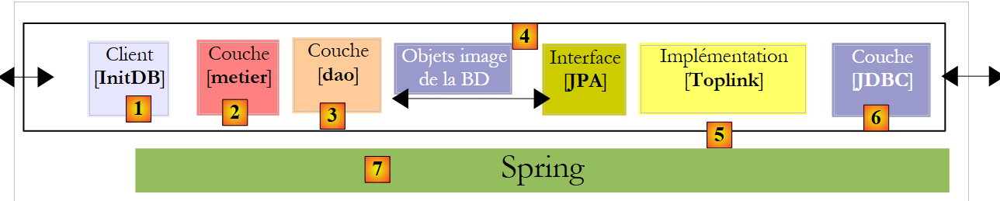 |
3 - een Jboss Ejb3/Hibernate-implementatie
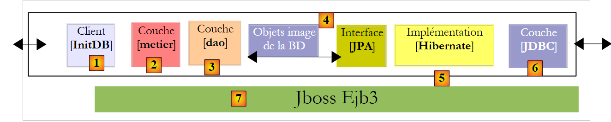 |
De voorbeelden in de tutorial behandelen deze drie architecturen samen met andere entiteiten die in het eerste deel van de tutorial zijn besproken:
Categorie - Artikel
 |
- in [1]: de Spring / Hibernate-versie
- in [2]: de Spring/Toplink-versie
- in [3]: de Jboss Ejb3/Hibernate-versie
Persoon - Adres - Activiteit
 |
- in [1]: de Spring/Hibernate-versie
- in [2]: de Spring/Toplink-versie
- en [3]: de JBoss EJB3/Hibernate-versie
Deze voorbeelden brengen geen vernieuwingen met zich mee wat betreft de architectuur. Ze spelen zich simpelweg af in een context waarin meerdere entiteiten moeten worden beheerd met één-op-veel- of veel-op-veel-relaties onderling, iets wat de voorbeelden met de entiteit Personne niet hadden.
3.4. Voorbeeld 3: Spring / JPA in een webapplicatie
3.4.1. Inleiding
We nemen hier een applicatie over die wordt gepresenteerd in het volgende document:
[ref4]: De basisprincipes van MVC-webontwikkeling in Java [http://tahe.developpez.com/java/baseswebmvc/].
Dit document behandelt de basisprincipes van MVC-webontwikkeling in Java. Om het volgende voorbeeld te kunnen begrijpen, moet de lezer over deze basiskennis beschikken. De webapplicatie maakt gebruik van de Tomcat-server. De installatie hiervan en het gebruik ervan binnen Eclipse worden beschreven in paragraaf 5.3.
De applicatie was ontwikkeld met een [dao]-laag die gebruikmaakte van de Ibatis-tool / SqlMap [http://ibatis.apache.org/], die de brug tussen relaties en objecten vormde. We beperken ons tot het vervangen van Ibatis door JPA. De architectuur van de applicatie ziet er als volgt uit:
 |
De webapplicatie die we gaan schrijven, maakt het mogelijk om een groep personen te beheren met vier bewerkingen:
- lijst van personen in de groep
- een persoon aan de groep toevoegen
- een persoon in de groep wijzigen
- een persoon uit de groep verwijderen
Deze vier basisbewerkingen komen overeen met de bewerkingen op een databasetabel. De volgende schermafbeeldingen tonen de pagina’s die de applicatie met de gebruiker uitwisselt.
 |
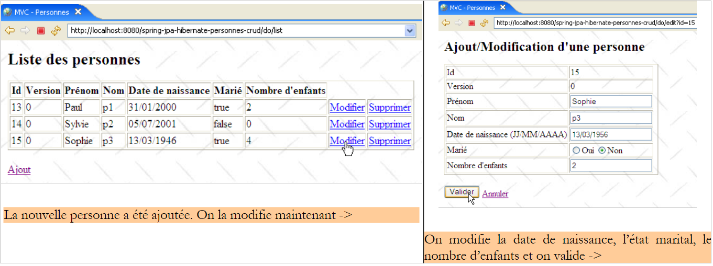 |
 |
 |
 |
3.4.2. Het Eclipse-project
Het Eclipse-project van de applicatie is als volgt:
 |
- in [1]: het webproject. Dit is een Eclipse-project van het type [Dynamic Web Project] [2]. Het is te vinden in [4] in de map [3] met voorbeelden uit de tutorial. We zullen het importeren.
 |
- in [5]: de broncode en de configuratie van de lagen [service, dao, jpa]. We behouden de opgebouwde kennis [dao, entites, service] van het Eclipse-project [hibernate-spring-personnes-metier-dao] dat in paragraaf 3.1.1 is besproken. We ontwikkelen alleen de laag [web], die hier wordt vertegenwoordigd door het pakket [web]. Verder behouden we de configuratiebestanden [persistence.xml, spring-config.xml] van dit project, met als enige verschil dat we de Postgres-versie SGBD gaan gebruiken, wat de volgende wijzigingen in [spring-config.xml] met zich meebrengt:
<?xml version="1.0" encoding="UTF-8"?>
<beans xmlns="http://www.springframework.org/schema/beans"
...
<bean id="entityManagerFactory" class="org.springframework.orm.jpa.LocalContainerEntityManagerFactoryBean">
<property name="dataSource" ref="dataSource" />
<property name="jpaVendorAdapter">
...
<property name="databasePlatform" value="org.hibernate.dialect.PostgreSQLDialect" />
...
</property>
...
</bean>
<!-- de gegevensbron DBCP -->
<bean id="dataSource" class="org.apache.commons.dbcp.BasicDataSource" destroy-method="close">
<property name="driverClassName" value="org.postgresql.Driver" />
<property name="url" value="jdbc:postgresql:jpa" />
<property name="username" value="jpa" />
<property name="password" value="jpa" />
</bean>
....
</beans>
De regels 8 en 16-19 zijn aangepast aan Postgres.
- in [6]: de map [WebContent] bevat de pagina’s JSP van het project en de benodigde bibliotheken. Deze laatste worden weergegeven in [8]
- De applicatie kan met verschillende SGBD worden gebruikt. Het volstaat om het bestand [spring-config.xml] aan te passen. De map [conf] [7] bevat het bestand [spring-config.xml] dat is aangepast voor verschillende SGBD.
3.4.3. De laag [web]
Onze applicatie heeft de volgende meerlaagse architectuur:
 |
De laag [web] biedt de gebruiker schermen waarmee hij de groep personen kan beheren:
- lijst met personen in de groep
- een persoon aan de groep toevoegen
- een persoon in de groep wijzigen
- een persoon uit de groep verwijderen
Hiervoor maakt deze laag gebruik van de laag [service], die op haar beurt weer een beroep doet op de laag [dao]. We hebben de schermen die door de laag [web] worden beheerd al besproken (paragraaf 3.4.1). Om de weblaag te beschrijven, zullen we achtereenvolgens het volgende behandelen:
- de configuratie ervan
- de weergaven
- de controller
- enkele tests
3.4.3.1. Configuratie van de webapplicatie
Laten we nog eens terugkomen op de architectuur van het Eclipse-project:
 |  |
- in het pakket [web] bevindt zich de controller van de webapplicatie: de klasse [Application].
- De pagina’s JSP / JSTL van de applicatie bevinden zich in [WEB-INF/vues].
- De map [WEB-INF/lib] bevat de externe bibliotheken die nodig zijn voor de applicatie. Deze zijn te vinden in de map [Web App Libraries].
[web.xml]
Het bestand [web.xml] wordt door de webserver gebruikt om de applicatie te laden. De inhoud ervan is als volgt:
<?xml version="1.0" encoding="UTF-8"?>
<web-app id="WebApp_ID" version="2.4" xmlns="http://java.sun.com/xml/ns/j2ee" xmlns:xsi="http://www.w3.org/2001/XMLSchema-instance"
xsi:schemaLocation="http://java.sun.com/xml/ns/j2ee http://java.sun.com/xml/ns/j2ee/web-app_2_4.xsd">
<display-name>spring-jpa-hibernate-personnes-crud</display-name>
<!-- ServletPersonne -->
<servlet>
<servlet-name>personnes</servlet-name>
<servlet-class>web.Application</servlet-class>
<init-param>
<param-name>urlEdit</param-name>
<param-value>/WEB-INF/vues/edit.jsp</param-value>
</init-param>
<init-param>
<param-name>urlErreurs</param-name>
<param-value>/WEB-INF/vues/erreurs.jsp</param-value>
</init-param>
<init-param>
<param-name>urlList</param-name>
<param-value>/WEB-INF/vues/list.jsp</param-value>
</init-param>
</servlet>
<!-- toewijzing ServletPersonne-->
<servlet-mapping>
<servlet-name>personnes</servlet-name>
<url-pattern>/do/*</url-pattern>
</servlet-mapping>
<!-- startpagina's -->
<welcome-file-list>
<welcome-file>index.jsp</welcome-file>
</welcome-file-list>
<!-- Pagina met onverwachte foutmelding -->
<error-page>
<exception-type>java.lang.Exception</exception-type>
<location>/WEB-INF/vues/exception.jsp</location>
</error-page>
</web-app>
- regels 23-26: de URL’s [/do/*] worden verwerkt door de servlet [personnes]
- regels 7-8: de servlet [personnes] is een instantie van de klasse [Application], een klasse die we gaan bouwen.
- regels 9-20: definiëren drie parameters [urlList, urlEdit, urlErreurs] die de URL’s van de pagina’s JSP van de weergaven [list, edit, erreurs] identificeren.
- regels 28-30: de applicatie heeft een standaard startpagina [index.jsp] die zich in de hoofdmap van de webapplicatie bevindt.
- regels 32-35: de applicatie heeft een standaardfoutpagina die wordt weergegeven wanneer de webserver een uitzondering opvangt die niet door de applicatie wordt afgehandeld.
- regel 37: de tag <exception-type> geeft het type uitzondering aan dat door de richtlijn <error-page> wordt afgehandeld; in dit geval het type [java.lang.Exception] en afgeleide types, dus alle uitzonderingen.
- regel 38: de tag <location> geeft de pagina JSP aan die moet worden weergegeven wanneer zich een uitzondering voordoet van het type dat is gedefinieerd door <exception-type>. De opgetreden uitzondering is op deze pagina beschikbaar in een object met de naam exception als de pagina de richtlijn bevat:
<%@ page isErrorPage="true" %>
- (vervolg)
- als <exception-type> een type T1 specificeert en er een uitzondering van het type T2 – die niet is afgeleid van T1 – wordt doorgegeven aan de webserver, stuurt deze de client een eigen, doorgaans weinig gebruiksvriendelijke uitzonderingspagina. Vandaar het nut van de tag <error-page> in het bestand [web.xml].
[index.jsp]
Deze pagina wordt weergegeven als een gebruiker rechtstreeks de context van de applicatie opvraagt zonder een URL op te geven, c.a.d. hier [/spring-jpa-hibernate-personnes-crud]. De inhoud ervan is als volgt:
<%@ page language="java" pageEncoding="ISO-8859-1" contentType="text/html;charset=ISO-8859-1"%>
<%@ taglib uri="/WEB-INF/c.tld" prefix="c" %>
<c:redirect url="/do/list"/>
[index.jsp] leidt de klant (regel 4) door naar de URL [/do/list]. Deze URL toont de lijst met personen in de groep.
3.4.3.2. De pagina’s JSP / JSTL van de applicatie
De weergave [list.jsp]
Deze wordt gebruikt om de lijst met personen weer te geven:

De code hiervoor is als volgt:
<%@ page language="java" pageEncoding="ISO-8859-1" contentType="text/html;charset=ISO-8859-1"%>
<%@ taglib uri="/WEB-INF/c.tld" prefix="c" %>
<%@ taglib uri="/WEB-INF/taglibs-datetime.tld" prefix="dt" %>
<html>
<head>
<title>MVC - Personnes</title>
</head>
<body background="<c:url value="/ressources/standard.jpg"/>">
<c:if test="${erreurs!=null}">
<h3>Les erreurs suivantes se sont produites :</h3>
<ul>
<c:forEach items="${erreurs}" var="erreur">
<li><c:out value="${erreur}"/></li>
</c:forEach>
</ul>
<hr>
</c:if>
<h2>Liste des personnes</h2>
<table border="1">
<tr>
<th>Id</th>
<th>Version</th>
<th>Prénom</th>
<th>Nom</th>
<th>Date de naissance</th>
<th>Marié</th>
<th>Nombre d'enfants</th>
<th></th>
</tr>
<c:forEach var="personne" items="${personnes}">
<tr>
<td><c:out value="${personne.id}"/></td>
<td><c:out value="${personne.version}"/></td>
<td><c:out value="${personne.prenom}"/></td>
<td><c:out value="${personne.nom}"/></td>
<td><dt:format pattern="dd/MM/yyyy">${personne.datenaissance.time}</dt:format></td>
<td><c:out value="${personne.marie}"/></td>
<td><c:out value="${personne.nbenfants}"/></td>
<td><a href="<c:url value="/do/edit?id=${personne.id}"/>">Modifier</a></td>
<td><a href="<c:url value="/do/delete?id=${personne.id}"/>">Supprimer</a></td>
</tr>
</c:forEach>
</table>
<br>
<a href="<c:url value="/do/edit?id=-1"/>">Ajout</a>
</body>
</html>
- Deze weergave ontvangt twee elementen in haar model:
- het element [personnes], gekoppeld aan een object van het type [List], dat op zijn beurt bestaat uit objecten van het type [Personne]: een lijst met personen.
- het optionele element [erreurs], gekoppeld aan een object van het type [List] van objecten van het type [String]: een lijst met foutmeldingen.
- regels 31-43: de lijst ${personnes} wordt doorlopen om een tabel van het type HTML weer te geven die de personen van de groep bevat.
- regel 40: de URL waarnaar de link [Modifier] verwijst, wordt ingesteld door het veld [id] van de huidige persoon, zodat de controller die gekoppeld is aan de URL [/do/edit] weet welke persoon moet worden gewijzigd.
- regel 41: hetzelfde geldt voor de link [Supprimer].
- regel 37: om de geboortedatum van de persoon weer te geven in de vorm JJ/MM/AAAA, gebruiken we de tag <dt> uit de tagbibliotheek [DateTime] van het Apache-project [Jakarta Taglibs]:

Het beschrijvingsbestand van deze tagbibliotheek wordt gedefinieerd op regel 3.
- regel 46: de link [Ajout] voor het toevoegen van een nieuwe persoon verwijst naar de URL [/do/edit], net als de link [Modifier] op regel 40. De waarde -1 van de parameter [id] geeft aan dat het om een toevoeging gaat in plaats van een wijziging.
- regels 10-18: als het element ${fouten} in het sjabloon voorkomt, worden de foutmeldingen die het bevat weergegeven.
De weergave [edit.jsp]
Deze wordt gebruikt om het formulier weer te geven waarmee een nieuwe persoon kan worden toegevoegd of een bestaande persoon kan worden gewijzigd:
 |
De code van de weergave [edit.jsp] is als volgt:
<%@ page language="java" pageEncoding="ISO-8859-1" contentType="text/html;charset=ISO-8859-1"%>
<%@ taglib uri="/WEB-INF/c.tld" prefix="c" %>
<%@ taglib uri="/WEB-INF/taglibs-datetime.tld" prefix="dt" %>
<html>
<head>
<title>MVC - Personnes</title>
</head>
<body background="../ressources/standard.jpg">
<h2>Ajout/Modification d'une personne</h2>
<c:if test="${erreurEdit!=''}">
<h3>Echec de la mise à jour :</h3>
L'erreur suivante s'est produite : ${erreurEdit}
<hr>
</c:if>
<form method="post" action="<c:url value="/do/validate"/>">
<table border="1">
<tr>
<td>Id</td>
<td>${id}</td>
</tr>
<tr>
<td>Version</td>
<td>${version}</td>
</tr>
<tr>
<td>Prénom</td>
<td>
<input type="text" value="${prenom}" name="prenom" size="20">
</td>
<td>${erreurPrenom}</td>
</tr>
<tr>
<td>Nom</td>
<td>
<input type="text" value="${nom}" name="nom" size="20">
</td>
<td>${erreurNom}</td>
</tr>
<tr>
<td>Date de naissance (JJ/MM/AAAA)</td>
<td>
<input type="text" value="${datenaissance}" name="datenaissance">
</td>
<td>${erreurDateNaissance}</td>
</tr>
<tr>
<td>Marié</td>
<td>
<c:choose>
<c:when test="${marie}">
<input type="radio" name="marie" value="true" checked>Oui
<input type="radio" name="marie" value="false">Non
</c:when>
<c:otherwise>
<input type="radio" name="marie" value="true">Oui
<input type="radio" name="marie" value="false" checked>Non
</c:otherwise>
</c:choose>
</td>
</tr>
<tr>
<td>Nombre d'enfants</td>
<td>
<input type="text" value="${nbenfants}" name="nbenfants">
</td>
<td>${erreurNbEnfants}</td>
</tr>
</table>
<br>
<input type="hidden" value="${id}" name="id">
<input type="hidden" value="${version}" name="version">
<input type="submit" value="Valider">
<a href="<c:url value="/do/list"/>">Annuler</a>
</form>
</body>
</html>
Deze weergave toont een formulier voor het toevoegen van een nieuwe persoon of het bijwerken van een bestaande persoon. Om de tekst verder te vereenvoudigen, zullen we hierna de enkele term [mise à jour] gebruiken. De knop [Valider] (regel 73) roept de POST van het formulier op via de URL [/do/validate] (regel 16). Als de POST mislukt, wordt de weergave [edit.jsp] opnieuw weergegeven met de fout(en) die zijn opgetreden; anders wordt de weergave [list.jsp] weergegeven.
- De weergave [edit.jsp], die zowel bij een geslaagde GET als bij een mislukte POST wordt weergegeven, bevat de volgende elementen in het sjabloon:
attribuut | GET | POST |
ID van de bijgewerkte bijgewerkt | idem | |
de versie | idem | |
zijn voornaam | ingevoerde voornaam | |
zijn achternaam | Achternaam ingevoerd | |
zijn geboortedatum | ingevoerde geboortedatum | |
zijn burgerlijke staat | ingevoerde burgerlijke staat | |
aantal kinderen | aantal kinderen ingevoerd | |
leeg | een foutmelding die aangeeft dat het toevoegen of wijziging op het moment van de POST, veroorzaakt door de knop [Envoyer]. Leeg indien er geen fout is opgetreden. | |
leeg | geeft een onjuiste voornaam aan – anders leeg | |
leeg | geeft een onjuiste achternaam aan – anders leeg | |
leeg | geeft een onjuiste geboortedatum aan – anders leeg | |
leeg | geeft een onjuist aantal kinderen aan – anders leeg |
- regels 11-15: als de POST van het formulier mislukt, krijgen we [erreurEdit!=''] en wordt er een foutmelding weergegeven.
- regel 16: het formulier wordt verzonden naar de URL [/do/validate]
- regel 20: het element [id] van het sjabloon wordt weergegeven
- regel 24: het element [version] van het sjabloon wordt weergegeven
- regels 26-32: invoer van de voornaam van de persoon:
- bij de eerste weergave van het formulier (GET), geeft ${voornaam} de huidige waarde weer van het veld [prenom] van het bijgewerkte object [Personne] en is ${erreurPrenom} leeg.
- bij een fout na POST worden de ingevoerde waarde ${voornaam} en de eventuele foutmelding ${erreurPrenom} opnieuw weergegeven
- regels 33-39: invoer van de achternaam van de persoon
- regels 40-46: invoer van de geboortedatum van de persoon
- regels 47-61: invoer van de burgerlijke staat van de persoon met een keuzerondje. De waarde van het veld [marie] van het object [Personne] wordt gebruikt om te bepalen welk van de twee keuzerondjes moet worden aangevinkt.
- regels 62-68: invoer van het aantal kinderen van de persoon
- regel 71: een verborgen veld HTML met de naam [id], waarvan de waarde gelijk is aan het veld [id] van de persoon die momenteel wordt bijgewerkt; -1 bij een toevoeging, een andere waarde bij een wijziging.
- regel 72: een verborgen veld HTML met de naam [version], waarvan de waarde gelijk is aan het veld [id] van de persoon die momenteel wordt bijgewerkt.
- regel 73: de knop [Valider] van het type [Submit] van het formulier
- regel 74: een link waarmee u terug kunt gaan naar de lijst met personen. Deze is [Annuler] genoemd omdat u hiermee het formulier kunt verlaten zonder het te valideren.
De weergave [exception.jsp]
Deze wordt gebruikt om een pagina weer te geven waarin wordt gemeld dat er een uitzondering is opgetreden die niet door de applicatie wordt afgehandeld en die is doorgegeven aan de webserver.
Laten we bijvoorbeeld een persoon verwijderen die niet in de groep voorkomt:
 |
De code van de weergave [exception.jsp] is als volgt:
<%@ page language="java" pageEncoding="ISO-8859-1" contentType="text/html;charset=ISO-8859-1"%>
<%@ taglib uri="/WEB-INF/c.tld" prefix="c" %>
<%@ page isErrorPage="true" %>
<%
response.setStatus(200);
%>
<html>
<head>
<title>MVC - Personnes</title>
</head>
<body background="<c:url value="/ressources/standard.jpg"/>">
<h2>MVC - personnes</h2>
L'exception suivante s'est produite :
<%= exception.getMessage()%>
<br><br>
<a href="<c:url value="/do/list"/>">Retour à la liste</a>
</body>
</html>
- Deze weergave ontvangt in haar sjabloon een sleutel, namelijk het element [exception], wat de uitzondering is die door de webserver is onderschept. Om ervoor te zorgen dat dit element door de webserver in het sjabloon van de pagina JSP wordt opgenomen, moet de pagina de tag op regel 3 hebben gedefinieerd.
- regel 6: de statuscode HTTP van het antwoord wordt ingesteld op 200. Dit is de eerste header HTTP van het antwoord. De code 200 geeft de klant aan dat zijn verzoek is gehonoreerd. Meestal is er een document met de code HTML in het antwoord van de server opgenomen. Dat is hier het geval. Als de statuscode HTTP van het antwoord niet op 200 wordt ingesteld, krijgt deze hier de waarde 500, wat betekent dat er een fout is opgetreden. De webserver heeft namelijk een onbehandelde uitzondering opgevangen, beschouwt deze situatie als abnormaal en meldt dit met de code 500. De reactie op de statuscode 500 verschilt per browser: Firefox geeft het document weer dat bij dit antwoord kan horen, terwijl een andere browser dit document negeert en zijn eigen pagina weergeeft. Om deze reden hebben we de code 500 vervangen door de code 200.
- regel 16: de tekst van de uitzondering wordt weergegeven
- regel 18: de gebruiker krijgt een link aangeboden om terug te keren naar de lijst met personen
De weergave [erreurs.jsp]
Deze wordt gebruikt om een pagina weer te geven die wijst op initialisatiefouten van de applicatie, c.a.d, en op fouten die zijn gedetecteerd tijdens de uitvoering van de methode [init] van de controller-servlet. Dit kan bijvoorbeeld het ontbreken van een parameter in het bestand [web.xml] zijn, zoals in het onderstaande voorbeeld te zien is:

De code van de pagina [erreurs.jsp] is als volgt:
<%@ page language="java" contentType="text/html; charset=ISO-8859-1"
pageEncoding="ISO-8859-1"%>
<!DOCTYPE HTML PUBLIC "-//W3C//DTD HTML 4.01 Transitional//EN">
<%@ taglib uri="/WEB-INF/c.tld" prefix="c" %>
<html>
<head>
<title>MVC - Personnes</title>
</head>
<body>
<h2>Les erreurs suivantes se sont produites</h2>
<ul>
<c:forEach var="erreur" items="${erreurs}">
<li>${erreur}</li>
</c:forEach>
</ul>
</body>
</html>
De pagina ontvangt in haar sjabloon een element [erreurs], dat een object is van het type [ArrayList] met objecten van het type [String], waarbij deze laatste foutmeldingen zijn. Ze worden weergegeven via de lus in de regels 13-15.
3.4.3.3. De controller van de applicatie
De controller [Application] is gedefinieerd in het pakket [web]:

Structu en initialisatie van de controller
Het raamwerk van de controller [Application] is als volgt:
package web;
...
@SuppressWarnings("serial")
public class Application extends HttpServlet {
// instantie-instellingen
private String urlErreurs = null;
private ArrayList erreursInitialisation = new ArrayList<String>();
private String[] paramètres = { "urlList", "urlEdit", "urlErreurs" };
private Map params = new HashMap<String, String>();
// service
private IService service = null;
// init
@SuppressWarnings("unchecked")
public void init() throws ServletException {
// de initialisatieparameters van de servlet worden opgehaald
ServletConfig config = getServletConfig();
// de overige initialisatieparameters worden verwerkt
String valeur = null;
for (int i = 0; i < paramètres.length; i++) {
// waarde van de parameter
valeur = config.getInitParameter(paramètres[i]);
// is de parameter aanwezig?
if (valeur == null) {
// de fout wordt genoteerd
erreursInitialisation.add("Le paramètre [" + paramètres[i] + "] n'a pas été initialisé");
} else {
// de waarde van de parameter wordt opgeslagen
params.put(paramètres[i], valeur);
}
}
// de URL van de weergave [erreurs] wordt op een speciale manier verwerkt
urlErreurs = config.getInitParameter("urlErreurs");
if (urlErreurs == null)
throw new ServletException("Le paramètre [urlErreurs] n'a pas été initialisé");
// configuratie van de applicatie
ApplicationContext ctx = new ClassPathXmlApplicationContext("spring-config.xml");
// servicelaag
service = (IService) ctx.getBean("service");
// de database wordt leeggemaakt
clean();
// de database wordt gevuld
try {
fill();
} catch (ParseException e) {
throw new ServletException(e);
}
}
// tabel vullen
public void fill() throws ParseException {
// personen aanmaken
Personne p1 = new Personne("p1", "Paul", new SimpleDateFormat("dd/MM/yy").parse("31/01/2000"), true, 2);
Personne p2 = new Personne("p2", "Sylvie", new SimpleDateFormat("dd/MM/yy").parse("05/07/2001"), false, 0);
// die we opslaan
service.saveArray(new Personne[] { p1, p2 });
}
// elementen uit de tabel verwijderen
public void clean() {
for (Personne p : service.getAll()) {
service.deleteOne(p.getId());
}
}
// GET
@SuppressWarnings("unchecked")
public void doGet(HttpServletRequest request, HttpServletResponse response) throws IOException, ServletException {
...
}
// lijst met personen weergeven
private void doListPersonnes(HttpServletRequest request, HttpServletResponse response) throws ServletException, IOException {
...
}
// een persoon wijzigen / toevoegen
private void doEditPersonne(HttpServletRequest request, HttpServletResponse response) throws ServletException, IOException {
...
}
// een persoon verwijderen
private void doDeletePersonne(HttpServletRequest request, HttpServletResponse response) throws ServletException, IOException {
...
}
// wijziging/toevoeging van een persoon bevestigen
public void doValidatePersonne(HttpServletRequest request, HttpServletResponse response) throws ServletException, IOException {
...
}
// weergave van een vooraf ingevuld formulier
private void showFormulaire(HttpServletRequest request, HttpServletResponse response, String erreurEdit) throws ServletException, IOException {
...
}
// verzenden
public void doPost(HttpServletRequest request, HttpServletResponse response) throws IOException, ServletException {
// doorgeven aan GET
doGet(request, response);
}
}
- regels 21-34: de verwachte parameters worden opgehaald uit het bestand [web.xml].
- regels 37-39: de parameter [urlErreurs] moet verplicht aanwezig zijn, omdat deze de URL aangeeft van de weergave [erreurs] die eventuele initialisatiefouten kan weergeven. Als deze niet bestaat, wordt de toepassing afgebroken door een [ServletException] te starten (regel 39). Deze uitzondering wordt doorgegeven aan de webserver en afgehandeld door de <error-page>-tag in het bestand [web.xml]. De weergave [exception.jsp] wordt dus weergegeven:
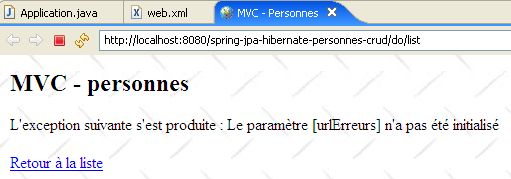
De bovenstaande link [Retour à la liste] werkt niet. Als u deze gebruikt, krijgt u hetzelfde antwoord zolang de applicatie niet is gewijzigd en opnieuw is geladen. Deze link is nuttig voor andere soorten uitzonderingen, zoals we al hebben gezien.
- regels 40-43: maken gebruik van het Spring-configuratiebestand om een verwijzing naar de laag [service] op te halen. Na het initialiseren van de controller beschikken de methoden daarvan over een [service]-referentie naar de laag [service] (regel 15), die ze zullen gebruiken om de door de gebruiker gevraagde acties uit te voeren. Deze acties worden onderschept door de methode [doGet], die ze door een specifieke methode van de controller laat verwerken:
Url | Methode HTTP | controller-methode |
GET | doListPersonnes | |
GET | doEditPersonne | |
POST | doValidatePersonne | |
GET | doDeletePersonne |
De methode [doGet]
Deze methode heeft tot doel de verwerking van de door de gebruiker aangevraagde acties naar de juiste methode te leiden. De code ervan is als volgt:
// GET
@SuppressWarnings("unchecked")
public void doGet(HttpServletRequest request, HttpServletResponse response) throws IOException, ServletException {
// we controleren hoe de initialisatie van de servlet is verlopen
if (erreursInitialisation.size() != 0) {
// we sturen de gebruiker door naar de foutpagina
request.setAttribute("erreurs", erreursInitialisation);
getServletContext().getRequestDispatcher(urlErreurs).forward(request, response);
// einde
return;
}
// we halen de methode op voor het verzenden van het verzoek
String méthode = request.getMethod().toLowerCase();
// de uit te voeren actie wordt opgehaald
String action = request.getPathInfo();
// actie?
if (action == null) {
action = "/list";
}
// actie uitvoeren
if (méthode.equals("get") && action.equals("/list")) {
// lijst met personen
doListPersonnes(request, response);
return;
}
if (méthode.equals("get") && action.equals("/delete")) {
// een persoon verwijderen
doDeletePersonne(request, response);
return;
}
if (méthode.equals("get") && action.equals("/edit")) {
// weergave formulier voor het toevoegen/wijzigen van een persoon
doEditPersonne(request, response);
return;
}
if (méthode.equals("post") && action.equals("/validate")) {
// formulier voor het toevoegen/wijzigen van een persoon valideren
doValidatePersonne(request, response);
return;
}
// overige gevallen
doListPersonnes(request, response);
}
- regels 7-13: er wordt gecontroleerd of de lijst met initialisatiefouten leeg is. Als dat niet het geval is, wordt de weergave [erreurs(erreurs)] weergegeven, die de fout(en) aangeeft.
- regel 15: de methode [get] of [post] wordt opgehaald die de klant heeft gebruikt om zijn verzoek in te dienen.
- regel 17: we halen de waarde van de parameter [action] uit de aanvraag op.
- regels 23-27: verwerking van het verzoek [GET /do/list], waarin de lijst met personen wordt opgevraagd.
- regels 28-32: verwerking van het verzoek [GET /do/delete], waarin wordt gevraagd om een persoon te verwijderen.
- regels 33-37: verwerking van de aanvraag [GET /do/edit], waarin wordt gevraagd om het formulier voor het bijwerken van een persoon.
- regels 38-42: verwerking van het verzoek [POST /do/validate], waarin wordt gevraagd om de validatie van de bijgewerkte persoon.
- regel 44: als de gevraagde actie niet een van de vijf voorgaande is, dan wordt er gehandeld alsof het om [GET /do/list] gaat.
De methode [doListPersonnes]
Deze methode verwerkt het verzoek [GET /do/list], dat de lijst met personen opvraagt:
De code hiervoor is als volgt:
// weergave van de lijst met personen
private void doListPersonnes(HttpServletRequest request, HttpServletResponse response) throws ServletException, IOException {
// het sjabloon van de weergave [list]
request.setAttribute("personnes", service.getAll());
// weergave van de weergave [list]
getServletContext().getRequestDispatcher((String) params.get("urlList")).forward(request, response);
}
- regel 4: de laag [service] wordt gevraagd om de lijst met personen uit de groep en deze wordt in het model geplaatst onder de sleutel "personen".
- regel 6: de weergave [list.jsp], zoals beschreven in paragraaf 3.4.3.2, wordt weergegeven.
De methode [doDeletePersonne]
Deze methode verwerkt de aanvraag [GET /do/delete?id=XX], die vraagt om het verwijderen van de persoon met id=XX. De URL [/do/delete?id=XX] is die van de links [Supprimer] in de weergave [list.jsp]:

met de volgende code:
...
<html>
<head>
<title>MVC - Personnes</title>
</head>
<body background="<c:url value="/ressources/standard.jpg"/>">
...
<c:forEach var="personne" items="${personnes}">
<tr>
...
<td><a href="<c:url value="/do/edit?id=${personne.id}"/>">Modifier</a></td>
<td><a href="<c:url value="/do/delete?id=${personne.id}"/>">Supprimer</a></td>
</tr>
</c:forEach>
</table>
<br>
<a href="<c:url value="/do/edit?id=-1"/>">Ajout</a>
</body>
</html>
Op regel 12 zien we de URL [/do/delete?id=XX] van de link [Supprimer]. De methode [doDeletePersonne], die deze URL moet verwerken, moet de persoon met id=XX verwijderen en vervolgens de nieuwe lijst met personen in de groep weergeven. De code hiervoor is als volgt:
// verwijderen van een persoon
private void doDeletePersonne(HttpServletRequest request, HttpServletResponse response) throws ServletException, IOException {
// de id van de persoon ophalen
int id = Integer.parseInt(request.getParameter("id"));
// de persoon verwijderen
service.deleteOne(id);
// doorverwijzing naar de lijst met personen
response.sendRedirect("list");
}
- regel 4: de verwerkte URL heeft de vorm [/do/delete?id=XX]. We halen de waarde [XX] op uit de parameter [id].
- regel 6: we vragen de laag [service] om de persoon met de verkregen id te verwijderen. We voeren geen controle uit. Als de persoon die we willen verwijderen niet bestaat, genereert de laag [dao] een uitzondering die door de laag [service] wordt doorgegeven. Ook hier, in de controller, wordt deze uitzondering niet afgehandeld. De uitzondering wordt dus doorgegeven aan de webserver, die op basis van de configuratie de pagina [exception.jsp] weergeeft, zoals beschreven in paragraaf 3.4.3.2:

- regel 9: als het verwijderen is gelukt (geen uitzondering), wordt de client gevraagd om door te sturen naar de relatieve URL [list]. Aangezien de zojuist verwerkte URL [/do/delete] is, wordt de omleidings-URL [/do/list]. De browser wordt dus naar [GET /do/list] geleid, waardoor de lijst met personen wordt weergegeven.
De methode [doEditPersonne]
Deze methode verwerkt het verzoek [GET /do/edit?id=XX], dat het formulier voor het bijwerken van de persoon met id=XX opvraagt. De URL [/do/edit?id=XX] is die van de links [Modifier] en [Ajout] van de weergave [list.jsp]:
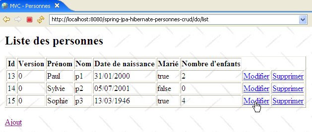
met de volgende code:
...
<html>
<head>
<title>MVC - Personnes</title>
</head>
<body background="<c:url value="/ressources/standard.jpg"/>">
...
<c:forEach var="personne" items="${personnes}">
<tr>
...
<td><a href="<c:url value="/do/edit?id=${personne.id}"/>">Modifier</a></td>
<td><a href="<c:url value="/do/delete?id=${personne.id}"/>">Supprimer</a></td>
</tr>
</c:forEach>
</table>
<br>
<a href="<c:url value="/do/edit?id=-1"/>">Ajout</a>
</body>
</html>
Op regel 11 zien we de URL [/do/edit?id=XX] van de link [Modifier] en op regel 17 de URL [/do/edit?id=-1] van de link [Ajout]. De methode [doEditPersonne] moet het bewerkingsformulier weergeven voor de persoon met id=XX of, als het om een toevoeging gaat, een leeg formulier weergeven.
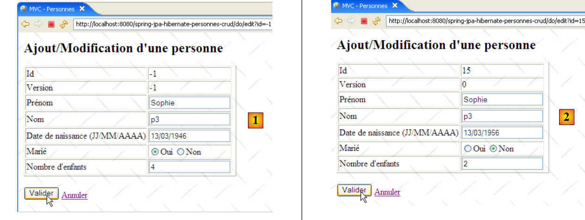 |
- In het bovenstaande voorbeeld is [1] het formulier voor toevoeging en [2] het formulier voor wijziging.
De code van de methode [doEditPersonne] is als volgt:
// een persoon wijzigen / toevoegen
private void doEditPersonne(HttpServletRequest request, HttpServletResponse response) throws ServletException, IOException {
// de ID van de persoon ophalen
int id = Integer.parseInt(request.getParameter("id"));
// toevoegen of wijzigen?
Personne personne = null;
if (id != -1) {
// wijzigen – de te wijzigen persoon ophalen
personne = service.getOne(id);
request.setAttribute("id", personne.getId());
request.setAttribute("version", personne.getVersion());
} else {
// toevoegen – een lege persoon aanmaken
personne = new Personne();
request.setAttribute("id", -1);
request.setAttribute("version", -1);
}
// het object [Personne] wordt in de sessie van de gebruiker geplaatst
request.getSession().setAttribute("personne", personne);
// en in het weergavemodel [edit]
request.setAttribute("erreurEdit", "");
request.setAttribute("prenom", personne.getPrenom());
request.setAttribute("nom", personne.getNom());
Date dateNaissance = personne.getDatenaissance();
if (dateNaissance != null) {
request.setAttribute("datenaissance", new SimpleDateFormat("dd/MM/yyyy").format(dateNaissance));
} else {
request.setAttribute("datenaissance", "");
}
request.setAttribute("marie", personne.isMarie());
request.setAttribute("nbenfants", personne.getNbenfants());
// weergave van de weergave [edit]
getServletContext().getRequestDispatcher((String) params.get("urlEdit")).forward(request, response);
}
- GET heeft als doel een URL van het type [/do/edit?id=XX]. Op regel 4 halen we de waarde van [id] op. Vervolgens zijn er twee gevallen:
- id is niet gelijk aan -1. Dan gaat het om een wijziging en moet er een vooraf ingevuld formulier worden weergegeven met de gegevens van de persoon die moet worden gewijzigd. Op regel 9 wordt deze persoon opgevraagd bij de laag [service].
- id is gelijk aan -1. Dan gaat het om een toevoeging en moet er een leeg formulier worden weergegeven. Hiervoor wordt in regel 14 een lege persoon aangemaakt.
- In beide gevallen worden de elementen [id, version] van het paginasjabloon [edit.jsp], zoals beschreven in paragraaf 3.4.3.2, geïnitialiseerd.
- Het verkregen object [Personne] wordt in het paginasjabloon [edit.jsp] geplaatst. Dit sjabloon bevat de volgende elementen: [erreurEdit, id, version, prenom, erreurPrenom, nom, erreurNom, datenaissance, erreurDateNaissance, marie, nbenfants, erreurNbEnfants]. Deze elementen worden geïnitialiseerd in de regels 19-31, met uitzondering van die waarvan de waarde de lege tekenreeks [erreurPrenom, erreurNom, erreurDateNaissance, erreurNbEnfants] is. Het is bekend dat, indien ze ontbreken in het sjabloon, de bibliotheek JSTL een lege tekenreeks als hun waarde zal weergeven. Hoewel het element [erreurEdit] eveneens een lege tekenreeks als waarde heeft, wordt het toch geïnitialiseerd omdat er op de pagina [edit.jsp] een controle op de waarde ervan wordt uitgevoerd.
- Zodra het model klaar is, wordt de controle overgedragen aan de pagina [edit.jsp], regel 33, die de weergave [edit] zal genereren.
De methode [doValidatePersonne]
Deze methode verwerkt de aanvraag [POST /do/validate] die het bijwerkformulier valideert. Deze POST wordt geactiveerd door de knop [Valider]:

Laten we de invoervelden van het formulier HTML uit de bovenstaande afbeelding nog eens bekijken:
<form method="post" action="<c:url value="/do/validate"/>">
...
<input type="text" value="${nom}" name="nom" size="20">
...
<input type="text" value="${datenaissance}" name="datenaissance">
...
<c:choose>
<c:when test="${marie}">
<input type="radio" name="marie" value="true" checked>Oui
<input type="radio" name="marie" value="false">Non
</c:when>
<c:otherwise>
<input type="radio" name="marie" value="true">Oui
<input type="radio" name="marie" value="false" checked>Non
</c:otherwise>
</c:choose>
...
<input type="text" value="${nbenfants}" name="nbenfants">
...
<input type="hidden" value="${id}" name="id">
<input type="hidden" value="${version}" name="version">
<input type="submit" value="Valider">
<a href="<c:url value="/do/list"/>">Annuler</a>
</form>
De aanvraag POST bevat de parameters [prenom, nom, datenaissance, marie, nbenfants, id] en wordt verzonden naar de URL [/do/validate] (regel 1). Deze wordt verwerkt door de volgende methode [doValidatePersonne]:
// bevestiging van wijziging/toevoeging van een persoon
public void doValidatePersonne(HttpServletRequest request, HttpServletResponse response) throws ServletException, IOException {
// de verzonden gegevens worden opgehaald
boolean formulaireErroné = false;
boolean erreur;
// de voornaam
String prenom = request.getParameter("prenom").trim();
// is de voornaam geldig?
if (prenom.length() == 0) {
// de fout wordt genoteerd
request.setAttribute("erreurPrenom", "Le prénom est obligatoire");
formulaireErroné = true;
}
// de achternaam
String nom = request.getParameter("nom").trim();
// is de voornaam geldig?
if (nom.length() == 0) {
// de fout wordt genoteerd
request.setAttribute("erreurNom", "Le nom est obligatoire");
formulaireErroné = true;
}
// de geboortedatum
Date datenaissance = null;
try {
datenaissance = new SimpleDateFormat("dd/MM/yyyy").parse(request.getParameter("datenaissance").trim());
} catch (ParseException e) {
// de fout wordt genoteerd
request.setAttribute("erreurDateNaissance", "Date incorrecte");
formulaireErroné = true;
}
// burgerlijke staat
boolean marie = Boolean.parseBoolean(request.getParameter("marie").trim());
// aantal kinderen
int nbenfants = 0;
erreur = false;
try {
nbenfants = Integer.parseInt(request.getParameter("nbenfants").trim());
if (nbenfants < 0) {
erreur = true;
}
} catch (NumberFormatException ex) {
// de fout wordt genoteerd
erreur = true;
}
// aantal kinderen onjuist?
if (erreur) {
// de fout wordt gemeld
request.setAttribute("erreurNbEnfants", "Nombre d'enfants incorrect");
formulaireErroné = true;
}
// ID van de persoon
int id = Integer.parseInt(request.getParameter("id"));
// is het formulier onjuist?
if (formulaireErroné) {
// het formulier wordt opnieuw weergegeven met de foutmeldingen
showFormulaire(request, response, "");
// klaar
return;
}
// het formulier is correct – de persoon die in de sessie is opgeslagen, wordt bijgewerkt
// met de door de klant verzonden gegevens
Personne personne = (Personne)request.getSession().getAttribute("personne");
personne.setDatenaissance(datenaissance);
personne.setMarie(marie);
personne.setNbenfants(nbenfants);
personne.setNom(nom);
personne.setPrenom(prenom);
// persistentie
try {
if (id == -1) {
// aanmaken
service.saveOne(personne);
} else {
// update
service.updateOne(personne);
}
} catch (DaoException ex) {
// het formulier wordt opnieuw weergegeven met de foutmelding
showFormulaire(request, response, ex.getMessage());
// klaar
return;
}
// doorverwijzing naar de lijst met personen
response.sendRedirect("list");
}
// weergave van het vooraf ingevulde formulier
private void showFormulaire(HttpServletRequest request, HttpServletResponse response, String erreurEdit) throws ServletException, IOException {
// het sjabloon voor de weergave wordt voorbereid [edit]
request.setAttribute("erreurEdit", erreurEdit);
request.setAttribute("id", request.getParameter("id"));
request.setAttribute("version", request.getParameter("version"));
request.setAttribute("prenom", request.getParameter("prenom").trim());
request.setAttribute("nom", request.getParameter("nom").trim());
request.setAttribute("datenaissance", request.getParameter("datenaissance").trim());
request.setAttribute("marie", request.getParameter("marie"));
request.setAttribute("nbenfants", request.getParameter("nbenfants").trim());
// weergave van de weergave [edit]
getServletContext().getRequestDispatcher((String) params.get("urlEdit")).forward(request, response);
}
- regels 7-13: de parameter [prenom] van de aanvraag POST wordt opgehaald en op geldigheid gecontroleerd. Als deze onjuist blijkt te zijn, wordt het element [erreurPrenom] geïnitialiseerd met een foutmelding en in de attributen van de aanvraag geplaatst.
- regels 15-21: op dezelfde manier wordt te werk gegaan voor de parameter [nom]
- regels 23-30: op dezelfde manier wordt te werk gegaan voor de parameter [datenaissance]
- regel 32: de parameter [marie] wordt opgehaald. De geldigheid ervan wordt niet gecontroleerd, omdat deze a priori afkomstig is van de waarde van een keuzerondje. Dat gezegd hebbende, staat niets een programma in de weg om een [POST /.../do/validate] te genereren in combinatie met een willekeurige parameter [marie]. We zouden de geldigheid van deze parameter dus moeten controleren. Hier vertrouwen we op onze uitzonderingsafhandeling, die ervoor zorgt dat de pagina [exception.jsp] wordt weergegeven als de controller de uitzonderingen niet zelf afhandelt. Als de conversie van de parameter [marie] naar een booleaanse waarde in regel 32 mislukt, zal er een uitzondering worden gegenereerd die ertoe leidt dat de pagina [exception.jsp] naar de klant wordt verzonden. Deze werking bevalt ons.
- regels 34-50: we halen de parameter [nbenfants] op en controleren de waarde ervan.
- regel 52: de parameter [id] wordt opgehaald zonder de waarde ervan te controleren
- regels 54-59: als het formulier fouten bevat, wordt het opnieuw weergegeven met de eerder gegenereerde foutmeldingen
- regels 62-67: als het formulier geldig is, wordt een nieuw object [Personne] aangemaakt met de gegevens uit het formulier
- regels 69-82: de persoon wordt opgeslagen. Het opslaan kan mislukken. In een omgeving met meerdere gebruikers kan de te wijzigen persoon zijn verwijderd of al door iemand anders zijn gewijzigd. In dat geval genereert de laag [dao] een uitzondering die hier wordt afgehandeld.
- regel 84: als er geen uitzondering is opgetreden, wordt de klant doorgestuurd naar de URL [/do/list] om de nieuwe status van de groep weer te geven.
- regel 79: als er tijdens het opslaan een uitzondering is opgetreden, vragen we opnieuw om het oorspronkelijke formulier weer te geven en geven we daarbij de foutmelding van de uitzondering door (3e parameter).
De methode [showFormulaire] (regels 88-97) stelt het sjabloon samen dat nodig is voor de pagina [edit.jsp] met de ingevoerde waarden (request.getParameter(" ... ")). We herinneren ons dat de foutmeldingen al door de methode [doValidatePersonne] in het sjabloon zijn geplaatst. De pagina [edit.jsp] wordt weergegeven in regel 99.
3.4.4. Tests van de webapplicatie
In paragraaf 3.4.1 zijn een aantal tests gepresenteerd. We nodigen de lezer uit om deze opnieuw uit te voeren. Hier tonen we nog enkele schermafbeeldingen die gevallen van conflicten bij de toegang tot gegevens in een multi-useromgeving illustreren:
[Firefox] is de browser van gebruiker U1. Deze vraagt de URL [http://localhost:8080/spring-jpa-hibernate-personnes-crud/do/list] op:

[IE7] is de browser van gebruiker U2. Deze vraagt dezelfde URL op:
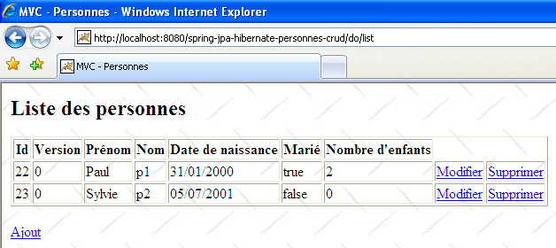
Gebruiker U1 opent de bewerkingspagina van persoon [p2]:
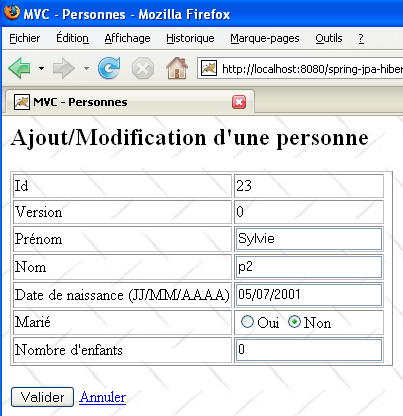
De gebruiker U2 doet hetzelfde:

Gebruiker U1 brengt wijzigingen aan en bevestigt deze:
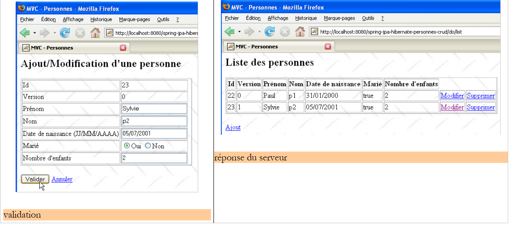 |
De gebruiker U2 doet hetzelfde:
 |
Gebruiker U2 keert terug naar de lijst met personen via de link [Retour à la liste] in het formulier:

Hij vindt de persoon [Lemarchand] zoals U1 deze heeft gewijzigd (getrouwd, 2 kinderen). Het versienummer van p2 is gewijzigd. Nu verwijdert U2 [p2]:
 |
U1 heeft nog steeds zijn eigen lijst en wil [p2] opnieuw wijzigen:
 |
U1 gebruikt de link [Retour à la liste] om te kijken wat er aan de hand is:

Hij ontdekt dat [p2] inderdaad niet meer op de lijst staat...
3.4.5. Versie 2
We passen de vorige versie enigszins aan om de archieven van de lagen [service, dao, jpa] te gebruiken in plaats van hun broncodes:
 |
- in [1]: het nieuwe Eclipse-project. Let op: de pakketten [service, dao, entites] zijn verdwenen. Deze zijn ingekapseld in het archief [service-dao-jpa-personne.jar] [2], dat zich in [WEB-INF/lib] bevindt.
- De projectmap bevindt zich in [4]. Deze zullen we importeren.
Meer hoeft er niet te gebeuren. Wanneer de nieuwe webapplicatie wordt gestart en de lijst met personen wordt opgevraagd, krijgen we het volgende antwoord:
 |
Hibernate kan de entiteit [Personne] niet vinden. Om dit probleem op te lossen, moeten we de beheerde entiteiten expliciet declareren in [persistence.xml]:
<?xml version="1.0" encoding="UTF-8"?>
<persistence version="1.0"
xmlns="http://java.sun.com/xml/ns/persistence"
xmlns:xsi="http://www.w3.org/2001/XMLSchema-instance"
xsi:schemaLocation="http://java.sun.com/xml/ns/persistence http://java.sun.com/xml/ns/persistence/persistence_1_0.xsd">
<persistence-unit name="jpa" transaction-type="RESOURCE_LOCAL">
<class>entites.Personne</class>
</persistence-unit>
</persistence>
- regel 7: de entiteit Personne wordt gedeclareerd.
Zodra dit is gebeurd, verdwijnt de uitzondering:
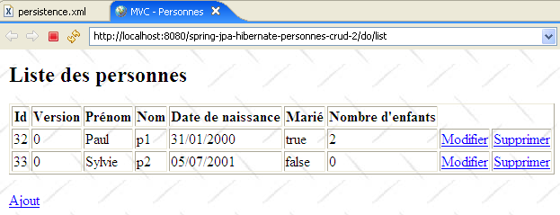 |
3.4.6. De implementatie wijzigen in JPA
 |
- in [1]: het nieuwe Eclipse-project
- in [2]: de Toplink-bibliotheken hebben de Hibernate-bibliotheken vervangen
- de projectmap is [4]. Deze wordt geïmporteerd.
Het wijzigen van de implementatie JPA houdt slechts enkele wijzigingen in het bestand [spring-config.xml] in. Verder verandert er niets. De wijzigingen in het bestand [spring-config.xml] zijn toegelicht in paragraaf 3.1.9:
<?xml version="1.0" encoding="UTF-8"?>
<!-- JVM moet worden gestart met het argument -javaagent:C:\data\2006-2007\eclipse\dvp-jpa\lib\spring\spring-agent.jar
(à remplacer par le chemin exact de spring-agent.jar)-->
<beans xmlns="http://www.springframework.org/schema/beans" xmlns:xsi="http://www.w3.org/2001/XMLSchema-instance"
...
<bean id="entityManagerFactory" class="org.springframework.orm.jpa.LocalContainerEntityManagerFactoryBean">
<property name="dataSource" ref="dataSource" />
<property name="jpaVendorAdapter">
<bean class="org.springframework.orm.jpa.vendor.TopLinkJpaVendorAdapter">
...
<property name="databasePlatform" value="oracle.toplink.essentials.platform.database.MySQL4Platform" />
...
</bean>
...
</beans>
Er hoeven maar een paar regels te worden aangepast om over te stappen van Hibernate naar Toplink:
- regel 11: de implementatie JPA wordt nu uitgevoerd door Toplink
- regel 13: de eigenschap [databasePlatform] heeft een andere waarde dan bij Hibernate: de naam van een klasse die specifiek is voor Toplink. Waar deze naam te vinden is, is uitgelegd in paragraaf 2.1.15.2.
Dat is alles. Merk op hoe eenvoudig het is om met Spring de SGBD of de implementatie JPA te wijzigen. We zijn echter nog niet helemaal klaar. Wanneer we de applicatie uitvoeren, krijgen we een uitzondering:
 |
Dit is een probleem dat we al in paragraaf 3.1.9 hebben beschreven. Het wordt opgelost door de JVM te starten met een Spring-agent. Hiervoor passen we de startconfiguratie van Tomcat aan:
 |
- in [1]: we hebben de optie [Run / Run...] gekozen om de configuratie van Tomcat te wijzigen
- in [2]: we hebben het tabblad [Arguments] geselecteerd
- in [3]: we hebben de parameter -javaagent toegevoegd zoals beschreven in paragraaf 3.1.9.
Nu dit is gebeurd, kunnen we de lijst met personen opvragen:

3.5. Andere voorbeelden
We hadden graag een webvoorbeeld willen laten zien waarin de Spring-container was vervangen door de Jboss Ejb3-container die in paragraaf 3.2 is besproken:
 |
- in [1]: het Eclipse-project
- in [3]: de locatie ervan in de map met voorbeelden. We zullen het importeren.
We hebben de configuratie [jboss-config.xml, persistence.xml] uit paragraaf 3.2 overgenomen en vervolgens de methode [init] van de controller [Application.java] als volgt aangepast:
// init
@SuppressWarnings("unchecked")
public void init() throws ServletException {
try {
// de initialisatieparameters van de servlet worden opgehaald
ServletConfig config = getServletConfig();
// de overige initialisatieparameters worden verwerkt
String valeur = null;
for (int i = 0; i < paramètres.length; i++) {
// waarde van de parameter
valeur = config.getInitParameter(paramètres[i]);
// is de parameter aanwezig?
if (valeur == null) {
// de fout wordt genoteerd
erreursInitialisation.add("Le paramètre [" + paramètres[i] + "] n'a pas été initialisé");
} else {
// de waarde van de parameter wordt opgeslagen
params.put(paramètres[i], valeur);
}
}
// de URL van de weergave [erreurs] wordt op een speciale manier verwerkt
urlErreurs = config.getInitParameter("urlErreurs");
if (urlErreurs == null)
throw new ServletException("Le paramètre [urlErreurs] n'a pas été initialisé");
// configuratie van de applicatie
// de container wordt gestart EJB3 JBoss
// de configuratiebestanden ejb3-interceptors-aop.xml en embedded-jboss-beans.xml worden gebruikt
EJB3StandaloneBootstrap.boot(null);
// Aanmaken van applicatiespecifieke beans
EJB3StandaloneBootstrap.deployXmlResource("META-INF/jboss-config.xml");
// Alle EJB-bestanden die in het classpath van de applicatie zijn gevonden, worden geïmplementeerd
//EJB3StandaloneBootstrap.scanClasspath("WEB-INF/classes".replace("/", File.separator));
EJB3StandaloneBootstrap.scanClasspath();
// De context JNDI wordt geïnitialiseerd. Het bestand jndi.properties wordt gebruikt
InitialContext initialContext = new InitialContext();
// instantiëring van de servicelaag
service = (IService) initialContext.lookup("Service/local");
// de database wordt leeggemaakt
clean();
// de database wordt gevuld
fill();
} catch (Exception e) {
throw new ServletException(e);
}
}
- regels 28-38: de Ejb3-container wordt gestart. Deze vervangt de Spring-container.
- regel 41: er wordt een referentie aangevraagd op de laag [service] van de applicatie.
In principe zijn dit de enige wijzigingen die moeten worden aangebracht. Bij uitvoering krijgen we de volgende foutmelding:
 |
Ik heb niet kunnen achterhalen waar het probleem precies zat. De door Tomcat gemelde uitzondering lijkt aan te geven dat het object met de naam "TransactionManager" werd opgevraagd bij de service JNDI en dat deze het object niet kende. Ik laat het aan de lezers over om een oplossing voor dit probleem te vinden. Als er een oplossing wordt gevonden, zal deze in het document worden opgenomen.